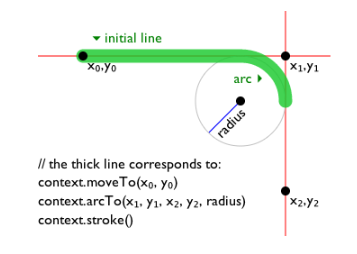
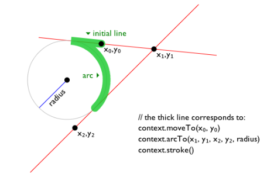
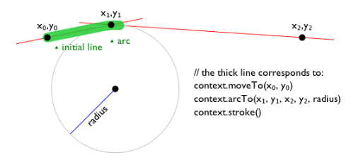
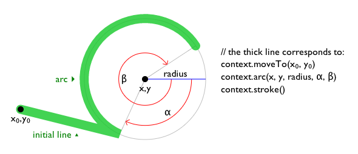
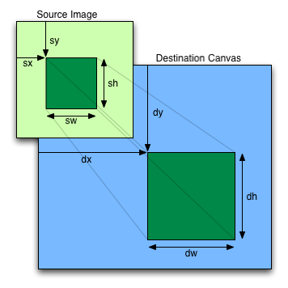
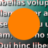
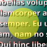
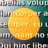
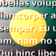
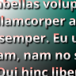

The canvas element
- Categories:
- Flow content.
- Phrasing content.
- Embedded content.
- Palpable content.
- Phrasing content.
- Contexts in which this element can be used:
- Where embedded content is expected.
- Content model:
- Transparent, but with no interactive content descendants except
for
aelements,imgelements withusemapattributes,buttonelements,inputelements whosetypeattribute are in the Checkbox or Radio Button states,inputelements that are buttons, andselectelements with amultipleattribute or a display size greater than 1. - Tag omission in text/html:
- Neither tag is omissible.
- Content attributes:
- Global attributes
width— Horizontal dimensionheight— Vertical dimension - Accessibility considerations:
- For authors.
- For implementers.
- DOM interface:
-
typedef (CanvasRenderingContext2D or ImageBitmapRenderingContext or WebGLRenderingContext or WebGL2RenderingContext or GPUCanvasContext) RenderingContext; [Exposed=Window] interface HTMLCanvasElement : HTMLElement { [HTMLConstructor] constructor(); [CEReactions] attribute unsigned long width; [CEReactions] attribute unsigned long height; RenderingContext? getContext(DOMString contextId, optional any options = null); USVString toDataURL(optional DOMString type = "image/png", optional any quality); undefined toBlob(BlobCallback _callback, optional DOMString type = "image/png", optional any quality); OffscreenCanvas transferControlToOffscreen(); }; callback BlobCallback = undefined (Blob? blob);
The canvas element provides scripts with a resolution-dependent bitmap canvas,
which can be used for rendering graphs, game graphics, art, or other visual images on the fly.
Authors should not use the canvas element in a document when a more suitable
element is available. For example, it is inappropriate to use a canvas element to
render a page heading: if the desired presentation of the heading is graphically intense, it
should be marked up using appropriate elements (typically h1) and then styled using
CSS and supporting technologies such as shadow trees.
When authors use the canvas element, they must also provide content that, when
presented to the user, conveys essentially the same function or purpose as the
canvas's bitmap. This content may be placed as content of the canvas
element. The contents of the canvas element, if any, are the element's fallback
content.
In interactive visual media, if scripting is enabled for
the canvas element, and if support for canvas elements has been enabled,
then the canvas element represents embedded content
consisting of a dynamically created image, the element's bitmap.
In non-interactive, static, visual media, if the canvas element has been
previously associated with a rendering context (e.g. if the page was viewed in an interactive
visual medium and is now being printed, or if some script that ran during the page layout process
painted on the element), then the canvas element represents
embedded content with the element's current bitmap and size. Otherwise, the element
represents its fallback content instead.
In non-visual media, and in visual media if scripting is
disabled for the canvas element or if support for canvas elements
has been disabled, the canvas element represents its fallback
content instead.
When a canvas element represents embedded content, the
user can still focus descendants of the canvas element (in the fallback
content). When an element is focused, it is the target of keyboard interaction
events (even though the element itself is not visible). This allows authors to make an interactive
canvas keyboard-accessible: authors should have a one-to-one mapping of interactive regions to focusable areas in the fallback content. (Focus has no
effect on mouse interaction events.) [UIEVENTS]
An element whose nearest canvas element ancestor is being rendered
and represents embedded content is an element that is being used as
relevant canvas fallback content.
The canvas element has two attributes to control the size of the element's bitmap:
width and height. These attributes,
when specified, must have values that are valid
non-negative integers. The rules for parsing non-negative
integers must be used to obtain their numeric
values. If an attribute is missing, or if parsing its value returns an error, then the
default value must be used instead. The width
attribute defaults to 300, and the height attribute
defaults to 150.
When setting the value of the width or height attribute, if the context mode of the canvas
element is set to placeholder, the
user agent must throw an "InvalidStateError" DOMException
and leave the attribute's value unchanged.
The natural dimensions of the canvas element when it
represents embedded content are equal to the dimensions of the
element's bitmap.
The user agent must use a square pixel density consisting of one pixel of image data per
coordinate space unit for the bitmaps of a canvas and its rendering contexts.
A canvas element can be sized arbitrarily by a style sheet, its
bitmap is then subject to the
The bitmaps of canvas elements, the bitmaps of ImageBitmap objects,
as well as some of the bitmaps of rendering contexts, such as those described in the sections on
the CanvasRenderingContext2D, OffscreenCanvasRenderingContext2D, and
ImageBitmapRenderingContext objects below, have an origin-clean flag, which can be set to true or false.
Initially, when the canvas element or ImageBitmap object is created, its
bitmap's origin-clean flag must be set to
true.
A canvas element can have a rendering context bound to it. Initially, it does not
have a bound rendering context. To keep track of whether it has a rendering context or not, and
what kind of rendering context it is, a canvas also has a canvas context mode, which is initially none but can be changed to either placeholder, 2d, bitmaprenderer, webgl, webgl2, or webgpu by algorithms defined in this specification.
When its canvas context mode is none, a canvas element has no rendering context,
and its bitmap must be transparent black with a natural width equal
to the numeric value of the element's width attribute and a natural height equal to
the numeric value of the element's height attribute, those values being interpreted in CSS pixels, and being updated as the attributes are set, changed, or
removed.
When its canvas context mode is placeholder, a canvas element has no
rendering context. It serves as a placeholder for an OffscreenCanvas object, and
the content of the canvas element is updated by the OffscreenCanvas
object's rendering context.
When a canvas element represents embedded content, it provides a
paint source whose width is the element's natural width, whose height
is the element's natural height, and whose appearance is the element's bitmap.
Whenever the width and height content attributes are set, removed, changed, or
redundantly set to the value they already have, then the user agent must perform the action
from the row of the following table that corresponds to the canvas element's context mode.
|
Action | |
|---|---|
|
Follow the steps to set bitmap
dimensions to the numeric values
of the | |
|
Follow the behavior defined in the WebGL specifications. [WEBGL] | |
|
Follow the behavior defined in WebGPU. [WEBGPU] | |
|
If the context's bitmap
mode is set to blank,
run the steps to set an | |
|
Do nothing. | |
|
Do nothing. |
The width
and height
IDL attributes must reflect the respective content attributes of the same name, with
the same defaults.
context = canvas.getContext(contextId [, options ])-
Returns an object that exposes an API for drawing on the canvas. contextId specifies the desired API: "
2d", "bitmaprenderer", "webgl", "webgl2", or "webgpu". options is handled by that API.This specification defines the "
2d" and "bitmaprenderer" contexts below. The WebGL specifications define the "webgl" and "webgl2" contexts. WebGPU defines the "webgpu" context. [WEBGL] [WEBGPU]Returns null if contextId is not supported, or if the canvas has already been initialized with another context type (e.g., trying to get a "
2d" context after getting a "webgl" context).
The getContext(contextId, options)
method of the canvas element, when invoked, must run these steps:
If options is not an object, then set options to null.
Set options to the result of converting options to a JavaScript value.
-
Run the steps in the cell of the following table whose column header matches this
canvaselement's canvas context mode and whose row header matches contextId:none 2d bitmaprenderer webgl or webgl2 webgpu placeholder " 2d"Let context be the result of running the 2D context creation algorithm given this and options.
Set this's context mode to 2d.
Return context.
Return the same object as was returned the last time the method was invoked with this same first argument. Return null. Return null. Return null. Throw an " InvalidStateError"DOMException." bitmaprenderer"Let context be the result of running the
ImageBitmapRenderingContextcreation algorithm given this and options.Set this's context mode to bitmaprenderer.
Return context.
Return null. Return the same object as was returned the last time the method was invoked with this same first argument. Return null. Return null. Throw an " InvalidStateError"DOMException." webgl" or "webgl2", if the user agent supports the WebGL feature in its current configurationLet context be the result of following the instructions given in the WebGL specifications' Context Creation sections. [WEBGL]
If context is null, then return null; otherwise set this's context mode to webgl or webgl2.
Return context.
Return null. Return null. Return the same object as was returned the last time the method was invoked with this same first argument. Return null. Throw an " InvalidStateError"DOMException." webgpu", if the user agent supports the WebGPU feature in its current configurationLet context be the result of following the instructions given in WebGPU's Canvas Rendering section. [WEBGPU]
If context is null, then return null; otherwise set this's context mode to webgpu.
Return context.
Return null. Return null. Return null. Return the same object as was returned the last time the method was invoked with this same first argument. Throw an " InvalidStateError"DOMException.An unsupported value* Return null. Return null. Return null. Return null. Return null. Throw an " InvalidStateError"DOMException.* For example, the "
webgl" or "webgl2" value in the case of a user agent having exhausted the graphics hardware's abilities and having no software fallback implementation.
url = canvas.toDataURL([ type [, quality ] ])-
Returns a
data:URL for the image in the canvas.The first argument, if provided, controls the type of the image to be returned (e.g. PNG or JPEG). The default is "
image/png"; that type is also used if the given type isn't supported. The second argument applies if the type is an image format that supports variable quality (such as "image/jpeg"), and is a number in the range 0.0 to 1.0 inclusive indicating the desired quality level for the resulting image.When trying to use types other than "
image/png", authors can check if the image was really returned in the requested format by checking to see if the returned string starts with one of the exact strings "data:image/png," or "data:image/png;". If it does, the image is PNG, and thus the requested type was not supported. (The one exception to this is if the canvas has either no height or no width, in which case the result might simply be "data:,".) canvas.toBlob(callback [, type [, quality ] ])-
Creates a
Blobobject representing a file containing the image in the canvas, and invokes a callback with a handle to that object.The second argument, if provided, controls the type of the image to be returned (e.g. PNG or JPEG). The default is "
image/png"; that type is also used if the given type isn't supported. The third argument applies if the type is an image format that supports variable quality (such as "image/jpeg"), and is a number in the range 0.0 to 1.0 inclusive indicating the desired quality level for the resulting image. canvas.transferControlToOffscreen()-
Returns a newly created
OffscreenCanvasobject that uses thecanvaselement as a placeholder. Once thecanvaselement has become a placeholder for anOffscreenCanvasobject, its natural size can no longer be changed, and it cannot have a rendering context. The content of the placeholder canvas is updated on theOffscreenCanvas's relevant agent's event loop's update the rendering steps.
The toDataURL(type, quality) method,
when invoked, must run these steps:
If this
canvaselement's bitmap's origin-clean flag is set to false, then throw a "SecurityError"DOMException.If this
canvaselement's bitmap has no pixels (i.e. either its horizontal dimension or its vertical dimension is zero), then return the string "data:,". (This is the shortestdata:URL; it represents the empty string in atext/plainresource.)Let file be a serialization of this
canvaselement's bitmap as a file, passing type and quality if given.If file is null, then return "
data:,".
The toBlob(callback, type,
quality) method, when invoked, must run these steps:
If this
canvaselement's bitmap's origin-clean flag is set to false, then throw a "SecurityError"DOMException.Let result be null.
If this
canvaselement's bitmap has pixels (i.e., neither its horizontal dimension nor its vertical dimension is zero), then set result to a copy of thiscanvaselement's bitmap.-
Run these steps in parallel:
If result is non-null, then set result to a serialization of result as a file with type and quality if given.
-
Queue an element task on the canvas blob serialization task source given the
canvaselement to run these steps:If result is non-null, then set result to a new
Blobobject, created in the relevant realm of thiscanvaselement, representing result. [FILEAPI]Invoke callback with « result » and "
report".
The transferControlToOffscreen() method,
when invoked, must run these steps:
If this
canvaselement's context mode is not set to none, throw an "InvalidStateError"DOMException.Let offscreenCanvas be a new
OffscreenCanvasobject with its width and height equal to the values of thewidthandheightcontent attributes of thiscanvaselement.Set the offscreenCanvas's placeholder
canvaselement to a weak reference to thiscanvaselement.Set this
canvaselement's context mode to placeholder.Set the offscreenCanvas's inherited language to the language of this
canvaselement.Set the offscreenCanvas's inherited direction to the directionality of this
canvaselement.Return offscreenCanvas.
The 2D rendering context
typedef (HTMLImageElement or
SVGImageElement) HTMLOrSVGImageElement;
typedef (HTMLOrSVGImageElement or
HTMLVideoElement or
HTMLCanvasElement or
ImageBitmap or
OffscreenCanvas or
VideoFrame) CanvasImageSource;
enum CanvasColorType { "unorm8", "float16" };
enum CanvasFillRule { "nonzero", "evenodd" };
dictionary CanvasRenderingContext2DSettings {
boolean alpha = true;
boolean desynchronized = false;
PredefinedColorSpace colorSpace = "srgb";
CanvasColorType colorType = "unorm8";
boolean willReadFrequently = false;
};
enum ImageSmoothingQuality { "low", "medium", "high" };
[Exposed=Window]
interface CanvasRenderingContext2D {
// back-reference to the canvas
readonly attribute HTMLCanvasElement canvas;
};
CanvasRenderingContext2D includes CanvasSettings;
CanvasRenderingContext2D includes CanvasState;
CanvasRenderingContext2D includes CanvasTransform;
CanvasRenderingContext2D includes CanvasCompositing;
CanvasRenderingContext2D includes CanvasImageSmoothing;
CanvasRenderingContext2D includes CanvasFillStrokeStyles;
CanvasRenderingContext2D includes CanvasShadowStyles;
CanvasRenderingContext2D includes CanvasFilters;
CanvasRenderingContext2D includes CanvasRect;
CanvasRenderingContext2D includes CanvasDrawPath;
CanvasRenderingContext2D includes CanvasUserInterface;
CanvasRenderingContext2D includes CanvasText;
CanvasRenderingContext2D includes CanvasDrawImage;
CanvasRenderingContext2D includes CanvasImageData;
CanvasRenderingContext2D includes CanvasPathDrawingStyles;
CanvasRenderingContext2D includes CanvasTextDrawingStyles;
CanvasRenderingContext2D includes CanvasPath;
interface mixin CanvasSettings {
// settings
CanvasRenderingContext2DSettings getContextAttributes();
};
interface mixin CanvasState {
// state
undefined save(); // push state on state stack
undefined restore(); // pop state stack and restore state
undefined reset(); // reset the rendering context to its default state
boolean isContextLost(); // return whether context is lost
};
interface mixin CanvasTransform {
// transformations (default transform is the identity matrix)
undefined scale(unrestricted double x, unrestricted double y);
undefined rotate(unrestricted double angle);
undefined translate(unrestricted double x, unrestricted double y);
undefined transform(unrestricted double a, unrestricted double b, unrestricted double c, unrestricted double d, unrestricted double e, unrestricted double f);
[NewObject] DOMMatrix getTransform();
undefined setTransform(unrestricted double a, unrestricted double b, unrestricted double c, unrestricted double d, unrestricted double e, unrestricted double f);
undefined setTransform(optional DOMMatrix2DInit transform = {});
undefined resetTransform();
};
interface mixin CanvasCompositing {
// compositing
attribute unrestricted double globalAlpha; // (default 1.0)
attribute DOMString globalCompositeOperation; // (default "source-over")
};
interface mixin CanvasImageSmoothing {
// image smoothing
attribute boolean imageSmoothingEnabled; // (default true)
attribute ImageSmoothingQuality imageSmoothingQuality; // (default low)
};
interface mixin CanvasFillStrokeStyles {
// colors and styles (see also the CanvasPathDrawingStyles and CanvasTextDrawingStyles interfaces)
attribute (DOMString or CanvasGradient or CanvasPattern) strokeStyle; // (default black)
attribute (DOMString or CanvasGradient or CanvasPattern) fillStyle; // (default black)
CanvasGradient createLinearGradient(double x0, double y0, double x1, double y1);
CanvasGradient createRadialGradient(double x0, double y0, double r0, double x1, double y1, double r1);
CanvasGradient createConicGradient(double startAngle, double x, double y);
CanvasPattern? createPattern(CanvasImageSource image, [LegacyNullToEmptyString] DOMString repetition);
};
interface mixin CanvasShadowStyles {
// shadows
attribute unrestricted double shadowOffsetX; // (default 0)
attribute unrestricted double shadowOffsetY; // (default 0)
attribute unrestricted double shadowBlur; // (default 0)
attribute DOMString shadowColor; // (default transparent black)
};
interface mixin CanvasFilters {
// filters
attribute DOMString filter; // (default "none")
};
interface mixin CanvasRect {
// rects
undefined clearRect(unrestricted double x, unrestricted double y, unrestricted double w, unrestricted double h);
undefined fillRect(unrestricted double x, unrestricted double y, unrestricted double w, unrestricted double h);
undefined strokeRect(unrestricted double x, unrestricted double y, unrestricted double w, unrestricted double h);
};
interface mixin CanvasDrawPath {
// path API (see also CanvasPath)
undefined beginPath();
undefined fill(optional CanvasFillRule fillRule = "nonzero");
undefined fill(Path2D path, optional CanvasFillRule fillRule = "nonzero");
undefined stroke();
undefined stroke(Path2D path);
undefined clip(optional CanvasFillRule fillRule = "nonzero");
undefined clip(Path2D path, optional CanvasFillRule fillRule = "nonzero");
boolean isPointInPath(unrestricted double x, unrestricted double y, optional CanvasFillRule fillRule = "nonzero");
boolean isPointInPath(Path2D path, unrestricted double x, unrestricted double y, optional CanvasFillRule fillRule = "nonzero");
boolean isPointInStroke(unrestricted double x, unrestricted double y);
boolean isPointInStroke(Path2D path, unrestricted double x, unrestricted double y);
};
interface mixin CanvasUserInterface {
undefined drawFocusIfNeeded(Element element);
undefined drawFocusIfNeeded(Path2D path, Element element);
};
interface mixin CanvasText {
// text (see also the CanvasPathDrawingStyles and CanvasTextDrawingStyles interfaces)
undefined fillText(DOMString text, unrestricted double x, unrestricted double y, optional unrestricted double maxWidth);
undefined strokeText(DOMString text, unrestricted double x, unrestricted double y, optional unrestricted double maxWidth);
TextMetrics measureText(DOMString text);
};
interface mixin CanvasDrawImage {
// drawing images
undefined drawImage(CanvasImageSource image, unrestricted double dx, unrestricted double dy);
undefined drawImage(CanvasImageSource image, unrestricted double dx, unrestricted double dy, unrestricted double dw, unrestricted double dh);
undefined drawImage(CanvasImageSource image, unrestricted double sx, unrestricted double sy, unrestricted double sw, unrestricted double sh, unrestricted double dx, unrestricted double dy, unrestricted double dw, unrestricted double dh);
};
interface mixin CanvasImageData {
// pixel manipulation
ImageData createImageData([EnforceRange] long sw, [EnforceRange] long sh, optional ImageDataSettings settings = {});
ImageData createImageData(ImageData imageData);
ImageData getImageData([EnforceRange] long sx, [EnforceRange] long sy, [EnforceRange] long sw, [EnforceRange] long sh, optional ImageDataSettings settings = {});
undefined putImageData(ImageData imageData, [EnforceRange] long dx, [EnforceRange] long dy);
undefined putImageData(ImageData imageData, [EnforceRange] long dx, [EnforceRange] long dy, [EnforceRange] long dirtyX, [EnforceRange] long dirtyY, [EnforceRange] long dirtyWidth, [EnforceRange] long dirtyHeight);
};
enum CanvasLineCap { "butt", "round", "square" };
enum CanvasLineJoin { "round", "bevel", "miter" };
enum CanvasTextAlign { "start", "end", "left", "right", "center" };
enum CanvasTextBaseline { "top", "hanging", "middle", "alphabetic", "ideographic", "bottom" };
enum CanvasDirection { "ltr", "rtl", "inherit" };
enum CanvasFontKerning { "auto", "normal", "none" };
enum CanvasFontStretch { "ultra-condensed", "extra-condensed", "condensed", "semi-condensed", "normal", "semi-expanded", "expanded", "extra-expanded", "ultra-expanded" };
enum CanvasFontVariantCaps { "normal", "small-caps", "all-small-caps", "petite-caps", "all-petite-caps", "unicase", "titling-caps" };
enum CanvasTextRendering { "auto", "optimizeSpeed", "optimizeLegibility", "geometricPrecision" };
interface mixin CanvasPathDrawingStyles {
// line caps/joins
attribute unrestricted double lineWidth; // (default 1)
attribute CanvasLineCap lineCap; // (default "butt")
attribute CanvasLineJoin lineJoin; // (default "miter")
attribute unrestricted double miterLimit; // (default 10)
// dashed lines
undefined setLineDash(sequence<unrestricted double> segments); // default empty
sequence<unrestricted double> getLineDash();
attribute unrestricted double lineDashOffset;
};
interface mixin CanvasTextDrawingStyles {
// text
attribute DOMString lang; // (default: "inherit")
attribute DOMString font; // (default 10px sans-serif)
attribute CanvasTextAlign textAlign; // (default: "start")
attribute CanvasTextBaseline textBaseline; // (default: "alphabetic")
attribute CanvasDirection direction; // (default: "inherit")
attribute DOMString letterSpacing; // (default: "0px")
attribute CanvasFontKerning fontKerning; // (default: "auto")
attribute CanvasFontStretch fontStretch; // (default: "normal")
attribute CanvasFontVariantCaps fontVariantCaps; // (default: "normal")
attribute CanvasTextRendering textRendering; // (default: "auto")
attribute DOMString wordSpacing; // (default: "0px")
};
interface mixin CanvasPath {
// shared path API methods
undefined closePath();
undefined moveTo(unrestricted double x, unrestricted double y);
undefined lineTo(unrestricted double x, unrestricted double y);
undefined quadraticCurveTo(unrestricted double cpx, unrestricted double cpy, unrestricted double x, unrestricted double y);
undefined bezierCurveTo(unrestricted double cp1x, unrestricted double cp1y, unrestricted double cp2x, unrestricted double cp2y, unrestricted double x, unrestricted double y);
undefined arcTo(unrestricted double x1, unrestricted double y1, unrestricted double x2, unrestricted double y2, unrestricted double radius);
undefined rect(unrestricted double x, unrestricted double y, unrestricted double w, unrestricted double h);
undefined roundRect(unrestricted double x, unrestricted double y, unrestricted double w, unrestricted double h, optional (unrestricted double or DOMPointInit or sequence<(unrestricted double or DOMPointInit)>) radii = 0);
undefined arc(unrestricted double x, unrestricted double y, unrestricted double radius, unrestricted double startAngle, unrestricted double endAngle, optional boolean counterclockwise = false);
undefined ellipse(unrestricted double x, unrestricted double y, unrestricted double radiusX, unrestricted double radiusY, unrestricted double rotation, unrestricted double startAngle, unrestricted double endAngle, optional boolean counterclockwise = false);
};
[Exposed=(Window,Worker)]
interface CanvasGradient {
// opaque object
undefined addColorStop(double offset, DOMString color);
};
[Exposed=(Window,Worker)]
interface CanvasPattern {
// opaque object
undefined setTransform(optional DOMMatrix2DInit transform = {});
};
[Exposed=(Window,Worker)]
interface TextMetrics {
// x-direction
readonly attribute double width; // advance width
readonly attribute double actualBoundingBoxLeft;
readonly attribute double actualBoundingBoxRight;
// y-direction
readonly attribute double fontBoundingBoxAscent;
readonly attribute double fontBoundingBoxDescent;
readonly attribute double actualBoundingBoxAscent;
readonly attribute double actualBoundingBoxDescent;
readonly attribute double emHeightAscent;
readonly attribute double emHeightDescent;
readonly attribute double hangingBaseline;
readonly attribute double alphabeticBaseline;
readonly attribute double ideographicBaseline;
};
[Exposed=(Window,Worker)]
interface Path2D {
constructor(optional (Path2D or DOMString) path);
undefined addPath(Path2D path, optional DOMMatrix2DInit transform = {});
};
Path2D includes CanvasPath;To maintain compatibility with existing web content, user agents need to
enumerate methods defined in CanvasUserInterface immediately after the stroke() method on CanvasRenderingContext2D
objects.
context = canvas.getContext('2d' [, { [ alpha: true ] [, desynchronized: false ] [, colorSpace: 'srgb'] [, willReadFrequently: false ]} ])-
Returns a
CanvasRenderingContext2Dobject that is permanently bound to a particularcanvaselement.If the
alphamember is false, then the context is forced to always be opaque.If the
desynchronizedmember is true, then the context might be desynchronized.The
colorSpacemember specifies the color space of the rendering context.The
colorTypemember specifies the color type of the rendering context.If the
willReadFrequentlymember is true, then the context is marked for readback optimization. context.canvasReturns the
canvaselement.attributes = context.getContextAttributes()-
Returns an object whose:
alphamember is true if the context has an alpha component that is not 1.0; otherwise false.desynchronizedmember is true if the context can be desynchronized.colorSpacemember is a string indicating the context's color space.colorTypemember is a string indicating the context's color type.willReadFrequentlymember is true if the context is marked for readback optimization.
The CanvasRenderingContext2D 2D rendering context represents a flat linear
Cartesian surface whose origin (0,0) is at the top left corner, with the coordinate space having
x values increasing when going right, and y values increasing when going
down. The x-coordinate of the right-most edge is equal to the width of the rendering
context's output bitmap in CSS pixels; similarly, the
y-coordinate of the bottom-most edge is equal to the height of the rendering context's
output bitmap in CSS pixels.
The size of the coordinate space does not necessarily represent the size of the actual bitmaps that the user agent will use internally or during rendering. On high-definition displays, for instance, the user agent may internally use bitmaps with four device pixels per unit in the coordinate space, so that the rendering remains at high quality throughout. Anti-aliasing can similarly be implemented using oversampling with bitmaps of a higher resolution than the final image on the display.
Using CSS pixels to describe the size of a rendering context's output bitmap does not mean that when rendered the canvas will cover an equivalent area in CSS pixels. CSS pixels are reused for ease of integration with CSS features, such as text layout.
In other words, the canvas element below's rendering context has a 200x200
output bitmap (which internally uses CSS pixels as a
unit for ease of integration with CSS) and is rendered as 100x100 CSS
pixels:
<canvas width=200 height=200 style=width:100px;height:100px>The 2D context creation algorithm, which is passed a target (a
canvas element) and options, consists of running these steps:
Let settings be the result of converting options to the dictionary type
CanvasRenderingContext2DSettings. (This can throw an exception.)Let context be a new
CanvasRenderingContext2Dobject.Initialize context's
canvasattribute to point to target.Set context's output bitmap to the same bitmap as target's bitmap (so that they are shared).
Set bitmap dimensions to the numeric values of target's
widthandheightcontent attributes.Run the canvas settings output bitmap initialization algorithm, given context and settings.
Return context.
When the user agent is to set bitmap dimensions to width and height, it must run these steps:
Resize the output bitmap to the new width and height.
Let canvas be the
canvaselement to which the rendering context'scanvasattribute was initialized.If the numeric value of canvas's
widthcontent attribute differs from width, then set canvas'swidthcontent attribute to the shortest possible string representing width as a valid non-negative integer.If the numeric value of canvas's
heightcontent attribute differs from height, then set canvas'sheightcontent attribute to the shortest possible string representing height as a valid non-negative integer.
Only one square appears to be drawn in the following example:
// canvas is a reference to a <canvas> element
var context = canvas.getContext('2d');
context.fillRect(0,0,50,50);
canvas.setAttribute('width', '300'); // clears the canvas
context.fillRect(0,100,50,50);
canvas.width = canvas.width; // clears the canvas
context.fillRect(100,0,50,50); // only this square remainsThe canvas attribute must return the value it was
initialized to when the object was created.
The CanvasColorType enumeration is used to specify the color type of the canvas's backing store.
The "unorm8" value indicates that the type
for all color components is 8-bit unsigned normalized.
The "float16" value indicates that the type
for all color components is 16-bit floating point.
The CanvasFillRule enumeration is used to select the fill rule
algorithm by which to determine if a point is inside or outside a path.
The "nonzero" value indicates the nonzero winding
rule, wherein
a point is considered to be outside a shape if the number of times a half-infinite straight
line drawn from that point crosses the shape's path going in one direction is equal to the
number of times it crosses the path going in the other direction.
The "evenodd" value indicates the even-odd rule,
wherein
a point is considered to be outside a shape if the number of times a half-infinite straight
line drawn from that point crosses the shape's path is even.
If a point is not outside a shape, it is inside the shape.
The ImageSmoothingQuality enumeration is used to express a preference for the
interpolation quality to use when smoothing images.
The "low" value indicates a preference
for a low level of image interpolation quality. Low-quality image interpolation may be more
computationally efficient than higher settings.
The "medium" value indicates a
preference for a medium level of image interpolation quality.
The "high" value indicates a preference
for a high level of image interpolation quality. High-quality image interpolation may be more
computationally expensive than lower settings.
Bilinear scaling is an example of a relatively fast, lower-quality image-smoothing algorithm. Bicubic or Lanczos scaling are examples of image-smoothing algorithms that produce higher-quality output. This specification does not mandate that specific interpolation algorithms be used.
Implementation notes
This section is non-normative.
The output bitmap, when it is not directly displayed by the user agent,
implementations can, instead of updating this bitmap, merely remember the sequence of drawing
operations that have been applied to it until such time as the bitmap's actual data is needed
(for example because of a call to drawImage(), or
the createImageBitmap() factory method). In many
cases, this will be more memory efficient.
The bitmap of a canvas element is the one bitmap that's pretty much always going
to be needed in practice. The output bitmap of a rendering context, when it has one,
is always just an alias to a canvas element's bitmap.
Additional bitmaps are sometimes needed, e.g. to enable fast drawing when the canvas is being painted at a different size than its natural size, or to enable double buffering so that graphics updates, like page scrolling for example, can be processed concurrently while canvas draw commands are being executed.
The canvas settings
A CanvasSettings object has an output bitmap that is initialized when
the object is created.
The output bitmap has an origin-clean flag, which can be set to true or false. Initially, when one of these bitmaps is created, its origin-clean flag must be set to true.
The CanvasSettings object also has an alpha boolean. When a CanvasSettings object's
alpha is false, then its alpha component must be fixed
to 1.0 (fully opaque) for all pixels, and attempts to change the alpha component of any pixel must
be silently ignored.
Thus, the bitmap of such a context starts off as opaque black instead
of transparent black; clearRect()
always results in opaque black pixels, every fourth byte from getImageData() is always 255, the putImageData() method effectively ignores every fourth
byte in its input, and so on. However, the alpha component of styles and images drawn onto the
canvas are still honoured up to the point where they would impact the output bitmap's
alpha component; for instance, drawing a 50% transparent white square on a freshly created
output bitmap with its alpha set to false
will result in a fully-opaque gray square.
The CanvasSettings object also has a desynchronized boolean. When a
CanvasSettings object's desynchronized is true, then the user agent may
optimize the rendering of the canvas to reduce the latency, as measured from input events to
rasterization, by desynchronizing the canvas paint cycle from the event loop, bypassing the
ordinary user agent rendering algorithm, or both. Insofar as this mode involves bypassing the
usual paint mechanisms, rasterization, or both, it might introduce visible tearing artifacts.
The user agent usually renders on a buffer which is not being displayed, quickly swapping it and the one being scanned out for presentation; the former buffer is called back buffer and the latter front buffer. A popular technique for reducing latency is called front buffer rendering, also known as single buffer rendering, where rendering happens in parallel and racily with the scanning out process. This technique reduces the latency at the price of potentially introducing tearing artifacts and can be used to implement in total or part of the desynchronized boolean. [MULTIPLEBUFFERING]
The desynchronized boolean can be useful when implementing certain kinds of applications, such as drawing applications, where the latency between input and rasterization is critical.
The CanvasSettings object also has a will read frequently boolean. When a
CanvasSettings object's will read
frequently is true, the user agent may optimize the canvas for readback operations.
On most devices the user agent needs to decide whether to store the canvas's
output bitmap on the GPU (this is also called "hardware accelerated"), or on the CPU
(also called "software"). Most rendering operations are more performant for accelerated canvases,
with the major exception being readback with getImageData(), toDataURL(), or toBlob(). CanvasSettings objects with will read frequently equal to true tell the
user agent that the webpage is likely to perform many readback operations and that it is
advantageous to use a software canvas.
The CanvasSettings object also has a color space setting of type
PredefinedColorSpace. The CanvasSettings object's color space indicates the color space for the
output bitmap.
The CanvasSettings object also has a color type setting of type
CanvasColorType. The CanvasSettings object's color type indicates the data type of the
color and alpha components of the pixels of the output bitmap.
To initialize a CanvasSettings output
bitmap, given a CanvasSettings context and a
CanvasRenderingContext2DSettings settings:
Set context's alpha to settings["
alpha"].Set context's desynchronized to settings["
desynchronized"].Set context's color space to settings["
colorSpace"].Set context's color type to settings["
colorType"].Set context's will read frequently to settings["
willReadFrequently"].
The getContextAttributes() method
steps are to return «[ "alpha" →
this's alpha, "desynchronized" →
this's desynchronized, "colorSpace" → this's
color space, "colorType" → this's
color type, "willReadFrequently" →
this's will read frequently
]».
The canvas state
Objects that implement the CanvasState interface maintain a stack of drawing
states. Drawing states consist of:
The current transformation matrix.
The current clipping region.
The current letter spacing, word spacing, fill style, stroke style, filter, global alpha, compositing and blending operator, and shadow color.
The current values of the following attributes:
lineWidth,lineCap,lineJoin,miterLimit,lineDashOffset,shadowOffsetX,shadowOffsetY,shadowBlur,lang,font,textAlign,textBaseline,direction,fontKerning,fontStretch,fontVariantCaps,textRendering,imageSmoothingEnabled,imageSmoothingQuality.The current dash list.
The rendering context's bitmaps are not part of the drawing state, as they
depend on whether and how the rendering context is bound to a canvas element.
Objects that implement the CanvasState mixin have a context lost boolean, that is initialized to false
when the object is created. The context lost
value is updated in the context lost steps.
context.save()Pushes the current state onto the stack.
context.restore()Pops the top state on the stack, restoring the context to that state.
context.reset()Resets the rendering context, which includes the backing buffer, the drawing state stack, path, and styles.
context.isContextLost()Returns true if the rendering context was lost. Context loss can occur due to driver crashes, running out of memory, etc. In these cases, the canvas loses its backing storage and takes steps to reset the rendering context to its default state.
The save() method
steps are to push a copy of the current drawing state onto the drawing state stack.
The restore()
method steps are to pop the top entry in the drawing state stack, and reset the drawing state it
describes. If there is no saved state, then the method must do nothing.
The reset()
method steps are to reset the rendering context to its default state.
To reset the rendering context to its default state:
Clear canvas's bitmap to transparent black.
Empty the list of subpaths in context's current default path.
Clear the context's drawing state stack.
Reset everything that drawing state consists of to their initial values.
The isContextLost() method steps are to return
this's context lost.
Line styles
context.lineWidth [ = value ]styles.lineWidth [ = value ]-
Returns the current line width.
Can be set, to change the line width. Values that are not finite values greater than zero are ignored.
context.lineCap [ = value ]styles.lineCap [ = value ]-
Returns the current line cap style.
Can be set, to change the line cap style.
The possible line cap styles are "
butt", "round", and "square". Other values are ignored. context.lineJoin [ = value ]styles.lineJoin [ = value ]-
Returns the current line join style.
Can be set, to change the line join style.
The possible line join styles are "
bevel", "round", and "miter". Other values are ignored. context.miterLimit [ = value ]styles.miterLimit [ = value ]-
Returns the current miter limit ratio.
Can be set, to change the miter limit ratio. Values that are not finite values greater than zero are ignored.
context.setLineDash(segments)styles.setLineDash(segments)-
Sets the current line dash pattern (as used when stroking). The argument is a list of distances for which to alternately have the line on and the line off.
segments = context.getLineDash()segments = styles.getLineDash()-
Returns a copy of the current line dash pattern. The array returned will always have an even number of entries (i.e. the pattern is normalized).
context.lineDashOffsetstyles.lineDashOffset-
Returns the phase offset (in the same units as the line dash pattern).
Can be set, to change the phase offset. Values that are not finite values are ignored.
Objects that implement the CanvasPathDrawingStyles interface have attributes and
methods (defined in this section) that control how lines are treated by the object.
The lineWidth attribute gives the width of lines, in
coordinate space units. On getting, it must return the current value. On setting, zero, negative,
infinite, and NaN values must be ignored, leaving the value unchanged; other values must change
the current value to the new value.
When the object implementing the CanvasPathDrawingStyles interface is created, the
lineWidth attribute must initially have the value
1.0.
The lineCap attribute defines the type of endings that
UAs will place on the end of lines. The three valid values are "butt",
"round", and "square".
On getting, it must return the current value. On setting, the current value must be changed to the new value.
When the object implementing the CanvasPathDrawingStyles interface is created, the
lineCap attribute must initially have the value
"butt".
The lineJoin attribute defines the type of corners that
UAs will place where two lines meet. The three valid values are "bevel",
"round", and "miter".
On getting, it must return the current value. On setting, the current value must be changed to the new value.
When the object implementing the CanvasPathDrawingStyles interface is created, the
lineJoin attribute must initially have the value
"miter".
When the lineJoin attribute has the value "miter", strokes use the miter limit ratio to decide how to render joins. The
miter limit ratio can be explicitly set using the miterLimit
attribute. On getting, it must return the current value. On setting, zero, negative, infinite, and
NaN values must be ignored, leaving the value unchanged; other values must change the current
value to the new value.
When the object implementing the CanvasPathDrawingStyles interface is created, the
miterLimit attribute must initially have the value
10.0.
Each CanvasPathDrawingStyles object has a dash list, which is either
empty or consists of an even number of non-negative numbers. Initially, the dash list
must be empty.
The setLineDash(segments) method, when invoked, must run
these steps:
If any value in segments is not finite (e.g. an Infinity or a NaN value), or if any value is negative (less than zero), then return (without throwing an exception; user agents could show a message on a developer console, though, as that would be helpful for debugging).
If the number of elements in segments is odd, then let segments be the concatenation of two copies of segments.
Set the object's dash list to segments.
When the getLineDash() method is invoked, it must return a
sequence whose values are the values of the object's dash list, in the same
order.
It is sometimes useful to change the "phase" of the dash pattern, e.g. to achieve a "marching
ants" effect. The phase can be set using the lineDashOffset attribute. On getting, it must
return the current value. On setting, infinite and NaN values must be ignored, leaving the value
unchanged; other values must change the current value to the new value.
When the object implementing the CanvasPathDrawingStyles interface is created, the
lineDashOffset attribute must initially have
the value 0.0.
When a user agent is to trace a path, given an object style
that implements the CanvasPathDrawingStyles interface, it must run the following
algorithm. This algorithm returns a new path.
Let path be a copy of the path being traced.
Prune all zero-length line segments from path.
Remove from path any subpaths containing no lines (i.e. subpaths with just one point).
Replace each point in each subpath of path other than the first point and the last point of each subpath by a join that joins the line leading to that point to the line leading out of that point, such that the subpaths all consist of two points (a starting point with a line leading out of it, and an ending point with a line leading into it), one or more lines (connecting the points and the joins), and zero or more joins (each connecting one line to another), connected together such that each subpath is a series of one or more lines with a join between each one and a point on each end.
Add a straight closing line to each closed subpath in path connecting the last point and the first point of that subpath; change the last point to a join (from the previously last line to the newly added closing line), and change the first point to a join (from the newly added closing line to the first line).
If style's dash list is empty, then jump to the step labeled convert.
Let pattern width be the concatenation of all the entries of style's dash list, in coordinate space units.
For each subpath subpath in path, run the following substeps. These substeps mutate the subpaths in path in vivo.
Let subpath width be the length of all the lines of subpath, in coordinate space units.
Let offset be the value of style's
lineDashOffset, in coordinate space units.-
While offset is greater than pattern width, decrement it by pattern width.
While offset is less than zero, increment it by pattern width.
Define L to be a linear coordinate line defined along all lines in subpath, such that the start of the first line in the subpath is defined as coordinate 0, and the end of the last line in the subpath is defined as coordinate subpath width.
Let position be 0 minus offset.
Let index be 0.
Let current state be off (the other states being on and zero-on).
Dash on: Let segment length be the value of style's dash list's indexth entry.
Increment position by segment length.
If position is greater than subpath width, then end these substeps for this subpath and start them again for the next subpath; if there are no more subpaths, then jump to the step labeled convert instead.
If segment length is nonzero, then let current state be on.
Increment index by one.
Dash off: Let segment length be the value of style's dash list's indexth entry.
Let start be the offset position on L.
Increment position by segment length.
If position is less than zero, then jump to the step labeled post-cut.
If start is less than zero, then let start be zero.
If position is greater than subpath width, then let end be the offset subpath width on L. Otherwise, let end be the offset position on L.
-
Jump to the first appropriate step:
- If segment length is zero and current state is off
-
Do nothing, just continue to the next step.
- If current state is off
-
Cut the line on which end finds itself short at end and place a point there, cutting in two the subpath that it was in; remove all line segments, joins, points, and subpaths that are between start and end; and finally place a single point at start with no lines connecting to it.
The point has a directionality for the purposes of drawing line caps (see below). The directionality is the direction that the original line had at that point (i.e. when L was defined above).
- Otherwise
-
Cut the line on which start finds itself into two at start and place a point there, cutting in two the subpath that it was in, and similarly cut the line on which end finds itself short at end and place a point there, cutting in two the subpath that it was in, and then remove all line segments, joins, points, and subpaths that are between start and end.
If start and end are the same point, then this results in just the line being cut in two and two points being inserted there, with nothing being removed, unless a join also happens to be at that point, in which case the join must be removed.
Post-cut: If position is greater than subpath width, then jump to the step labeled convert.
Increment index by one. If it is equal to the number of entries in style's dash list, then let index be 0.
Return to the step labeled dash on.
-
Convert: This is the step that converts the path to a new path that represents its stroke.
Create a new path that describes the edge of the areas that would be covered if a straight line of length equal to style's
lineWidthwas swept along each subpath in path while being kept at an angle such that the line is orthogonal to the path being swept, replacing each point with the end cap necessary to satisfy style'slineCapattribute as described previously and elaborated below, and replacing each join with the join necessary to satisfy style'slineJointype, as defined below.Caps: Each point has a flat edge perpendicular to the direction of the line coming out of it. This is then augmented according to the value of style's
lineCap. The "butt" value means that no additional line cap is added. The "round" value means that a semi-circle with the diameter equal to style'slineWidthwidth must additionally be placed on to the line coming out of each point. The "square" value means that a rectangle with the length of style'slineWidthwidth and the width of half style'slineWidthwidth, placed flat against the edge perpendicular to the direction of the line coming out of the point, must be added at each point.Points with no lines coming out of them must have two caps placed back-to-back as if it was really two points connected to each other by an infinitesimally short straight line in the direction of the point's directionality (as defined above).
Joins: In addition to the point where a join occurs, two additional points are relevant to each join, one for each line: the two corners found half the line width away from the join point, one perpendicular to each line, each on the side furthest from the other line.
A triangle connecting these two opposite corners with a straight line, with the third point of the triangle being the join point, must be added at all joins. The
lineJoinattribute controls whether anything else is rendered. The three aforementioned values have the following meanings:The "
bevel" value means that this is all that is rendered at joins.The "
round" value means that an arc connecting the two aforementioned corners of the join, abutting (and not overlapping) the aforementioned triangle, with the diameter equal to the line width and the origin at the point of the join, must be added at joins.The "
miter" value means that a second triangle must (if it can given the miter length) be added at the join, with one line being the line between the two aforementioned corners, abutting the first triangle, and the other two being continuations of the outside edges of the two joining lines, as long as required to intersect without going over the miter length.The miter length is the distance from the point where the join occurs to the intersection of the line edges on the outside of the join. The miter limit ratio is the maximum allowed ratio of the miter length to half the line width. If the miter length would cause the miter limit ratio (as set by style's
miterLimitattribute) to be exceeded, then this second triangle must not be added.The subpaths in the newly created path must be oriented such that for any point, the number of times a half-infinite straight line drawn from that point crosses a subpath is even if and only if the number of times a half-infinite straight line drawn from that same point crosses a subpath going in one direction is equal to the number of times it crosses a subpath going in the other direction.
Return the newly created path.
Text styles
context.lang [ = value ]styles.lang [ = value ]-
Returns the current language setting.
Can be set to a BCP 47 language tag, the empty string, or "
inherit", to change the language used when resolving fonts. "inherit" takes the language from thecanvaselement's language, or the associated document element when there is nocanvaselement.The default is "
inherit". context.font [ = value ]styles.font [ = value ]-
Returns the current font settings.
Can be set, to change the font. The syntax is the same as for the CSS
Relative keywords and lengths are computed relative to the font of the
canvaselement. context.textAlign [ = value ]styles.textAlign [ = value ]-
Returns the current text alignment settings.
Can be set, to change the alignment. The possible values are and their meanings are given below. Other values are ignored. The default is "
start". context.textBaseline [ = value ]styles.textBaseline [ = value ]-
Returns the current baseline alignment settings.
Can be set, to change the baseline alignment. The possible values and their meanings are given below. Other values are ignored. The default is "
alphabetic". context.direction [ = value ]styles.direction [ = value ]-
Returns the current directionality.
Can be set, to change the directionality. The possible values and their meanings are given below. Other values are ignored. The default is "
inherit". context.letterSpacing [ = value ]styles.letterSpacing [ = value ]-
Returns the current spacing between characters in the text.
Can be set, to change spacing between characters. Values that cannot be parsed as a CSS <length> are ignored. The default is "
0px". context.fontKerning [ = value ]styles.fontKerning [ = value ]-
Returns the current font kerning settings.
Can be set, to change the font kerning. The possible values and their meanings are given below. Other values are ignored. The default is "
auto". context.fontStretch [ = value ]styles.fontStretch [ = value ]-
Returns the current font stretch settings.
Can be set, to change the font stretch. The possible values and their meanings are given below. Other values are ignored. The default is "
normal". context.fontVariantCaps [ = value ]styles.fontVariantCaps [ = value ]-
Returns the current font variant caps settings.
Can be set, to change the font variant caps. The possible values and their meanings are given below. Other values are ignored. The default is "
normal". context.textRendering [ = value ]styles.textRendering [ = value ]-
Returns the current text rendering settings.
Can be set, to change the text rendering. The possible values and their meanings are given below. Other values are ignored. The default is "
auto". context.wordSpacing [ = value ]styles.wordSpacing [ = value ]-
Returns the current spacing between words in the text.
Can be set, to change spacing between words. Values that cannot be parsed as a CSS <length> are ignored. The default is "
0px".
Objects that implement the CanvasTextDrawingStyles interface have attributes
(defined in this section) that control how text is laid out (rasterized or outlined) by the
object. Such objects can also have a font style source object. For
CanvasRenderingContext2D objects, this is the canvas element given by
the value of the context's canvas attribute. For
OffscreenCanvasRenderingContext2D objects, this is the associated
OffscreenCanvas object.
Font resolution for the font style source object requires a font
source. This is determined for a given object implementing
CanvasTextDrawingStyles by the following steps: [CSSFONTLOAD]
If object's font style source object is a
canvaselement, return the element's node document.-
Otherwise, object's font style source object is an
OffscreenCanvasobject:Let global be object's relevant global object.
If global is a
Windowobject, then return global's associatedDocument.Assert: global implements
WorkerGlobalScope.Return global.
This is an example of font resolution with a regular canvas element with ID c1.
const font = new FontFace("MyCanvasFont", "url(mycanvasfont.ttf)");
documents.fonts.add(font);
const context = document.getElementById("c1").getContext("2d");
document.fonts.ready.then(function() {
context.font = "64px MyCanvasFont";
context.fillText("hello", 0, 0);
});In this example, the canvas will display text using mycanvasfont.ttf as
its font.
This is an example of how font resolution can happen using OffscreenCanvas.
Assuming a canvas element with ID c2 which is transferred to
a worker like so:
const offscreenCanvas = document.getElementById("c2").transferControlToOffscreen();
worker.postMessage(offscreenCanvas, [offscreenCanvas]);Then, in the worker:
self.onmessage = function(ev) {
const transferredCanvas = ev.data;
const context = transferredCanvas.getContext("2d");
const font = new FontFace("MyFont", "url(myfont.ttf)");
self.fonts.add(font);
self.fonts.ready.then(function() {
context.font = "64px MyFont";
context.fillText("hello", 0, 0);
});
};In this example, the canvas will display a text using myfont.ttf.
Notice that the font is only loaded inside the worker, and not in the document context.
The font IDL attribute, on setting, must be parsed as a CSS <'font'> value (but
without supporting property-independent style sheet syntax like 'inherit'), and the resulting font
must be assigned to the context, with the
Font family names must be interpreted in the context of the font style source
object when the font is to be used; any fonts embedded using @font-face or loaded using FontFace objects that are visible to the
font style source object must therefore be available once they are loaded. (Each font style source
object has a font source, which determines what fonts are available.) If a font
is used before it is fully loaded, or if the font style source object does not have
that font in scope at the time the font is to be used, then it must be treated as if it was an
unknown font, falling back to another as described by the relevant CSS specifications.
[CSSFONTS] [CSSFONTLOAD]
On getting, the font attribute must return the serialized form of the current font of the context (with
no
For example, after the following statement:
context.font = 'italic 400 12px/2 Unknown Font, sans-serif';...the expression context.font would evaluate to the string "italic 12px "Unknown Font", sans-serif". The "400"
font-weight doesn't appear because that is the default value. The line-height doesn't appear
because it is forced to "normal", the default value.
When the object implementing the CanvasTextDrawingStyles interface is created, the
font of the context must be set to 10px sans-serif. When the
The textAlign IDL attribute, on getting, must return
the current value. On setting, the current value must be changed to the new value. When the object
implementing the CanvasTextDrawingStyles interface is created, the textAlign attribute must initially have the value start.
The textBaseline IDL attribute, on getting, must
return the current value. On setting, the current value must be changed to the new value. When the
object implementing the CanvasTextDrawingStyles interface is created, the textBaseline attribute must initially have the value
alphabetic.
Objects that implement the CanvasTextDrawingStyles interface have an associated
language value used to localize font
rendering. Valid values are a BCP 47 language tag, the empty string, or "inherit" where the language comes from the
canvas element's language, or the associated document element when there
is no canvas element. Initially, the language must be "inherit".
The direction IDL attribute, on getting, must return
the current value. On setting, the current value must be changed to the new value. When the object
implementing the CanvasTextDrawingStyles interface is created, the direction attribute must initially have the value "inherit".
Objects that implement the CanvasTextDrawingStyles interface have attributes that
control the spacing between letters and words. Such objects have associated letter spacing and word spacing values, which are CSS
<length> values. Initially, both must be the result of parsing "0px" as a CSS
<length>.
The letterSpacing getter steps are to return
the serialized form of this's letter spacing.
The letterSpacing setter steps are:
Let parsed be the result of parsing the given value as a CSS <length>.
If parsed is failure, then return.
Set this's letter spacing to parsed.
The wordSpacing getter steps are to return the
serialized form of this's word spacing.
The wordSpacing setter steps are:
Let parsed be the result of parsing the given value as a CSS <length>.
If parsed is failure, then return.
Set this's word spacing to parsed.
The fontKerning IDL attribute, on
getting, must return the current value. On setting, the current value must be changed to the new
value. When the object implementing the CanvasTextDrawingStyles interface is created,
the fontKerning attribute must
initially have the value "auto".
The fontStretch IDL attribute, on
getting, must return the current value. On setting, the current value must be changed to the new
value. When the object implementing the CanvasTextDrawingStyles interface is created,
the fontStretch attribute must
initially have the value "normal".
The fontVariantCaps IDL attribute, on
getting, must return the current value. On setting, the current value must be changed to the new
value. When the object implementing the CanvasTextDrawingStyles interface is created,
the fontVariantCaps attribute must
initially have the value "normal".
The textRendering IDL attribute, on
getting, must return the current value. On setting, the current value must be changed to the new
value. When the object implementing the CanvasTextDrawingStyles interface is created,
the textRendering attribute must
initially have the value "auto".
The textAlign attribute's allowed keywords are
as follows:
startAlign to the start edge of the text (left side in left-to-right text, right side in right-to-left text).
endAlign to the end edge of the text (right side in left-to-right text, left side in right-to-left text).
leftAlign to the left.
rightAlign to the right.
centerAlign to the center.
The textBaseline
attribute's allowed keywords correspond to alignment points in the
font:
![The em-over baseline is roughly at the top of the glyphs in a font, the hanging baseline is where some glyphs like आ are anchored, the middle is half-way between the em-over and em-under baselines, the alphabetic baseline is where characters like Á, ÿ, f, and Ω are anchored, the ideographic-under baseline is where glyphs like 私 and 達 are anchored, and the em-under baseline is roughly at the bottom of the glyphs in a font. The top and bottom of the bounding box can be far from these baselines, due to glyphs extending far outside em-over and em-under baselines.](../images/baselines.png)
The keywords map to these alignment points as follows:
top- The em-over baseline
hanging- The hanging baseline
middle- Halfway between the em-over baseline and the em-under baseline
alphabetic- The alphabetic baseline
ideographic- The ideographic-under baseline
bottom- The em-under baseline
The direction attribute's allowed keywords are
as follows:
ltrTreat input to the text preparation algorithm as left-to-right text.
rtlTreat input to the text preparation algorithm as right-to-left text.
inheritUse the process in the text preparation algorithm to obtain the text direction from the
canvaselement, placeholdercanvaselement, or document element.
The fontKerning attribute's allowed keywords
are as follows:
autoKerning is applied at the discretion of the user agent.
normalKerning is applied.
noneKerning is not applied.
The fontStretch attribute's allowed keywords
are as follows:
ultra-condensedSame as CSS
extra-condensedSame as CSS
condensedSame as CSS
semi-condensedSame as CSS
normalThe default setting, where width of the glyphs is at 100%.
semi-expandedSame as CSS
expandedSame as CSS
extra-expandedSame as CSS
ultra-expandedSame as CSS
The fontVariantCaps attribute's allowed
keywords are as follows:
normalNone of the features listed below are enabled.
small-capsSame as CSS
all-small-capsSame as CSS
petite-capsSame as CSS
all-petite-capsSame as CSS
unicaseSame as CSS
titling-capsSame as CSS
The textRendering attribute's allowed
keywords are as follows:
autoSame as 'auto' in SVG text-rendering property.
optimizeSpeedSame as 'optimizeSpeed' in SVG text-rendering property.
optimizeLegibilitySame as 'optimizeLegibility' in SVG text-rendering property.
geometricPrecisionSame as 'geometricPrecision' in SVG text-rendering property.
The text preparation algorithm is as follows. It takes as input a string text,
a CanvasTextDrawingStyles object target, and an optional length
maxWidth. It returns an array of glyph shapes, each positioned on a common coordinate
space, a physical alignment whose value is one of left, right, and
center, and an inline box. (Most callers of this algorithm ignore the
physical alignment and the inline box.)
If maxWidth was provided but is less than or equal to zero or equal to NaN, then return an empty array.
Replace all ASCII whitespace in text with U+0020 SPACE characters.
Let font be the current font of target, as given by that object's
fontattribute.Let language be the target's language.
-
If language is "
inherit":Let sourceObject be object's font style source object.
If sourceObject is a
canvaselement, then set language to the sourceObject's language.-
Otherwise:
Assert: sourceObject is an
OffscreenCanvasobject.Set language to the sourceObject's inherited language.
If language is the empty string, then set language to explicitly unknown.
-
Apply the appropriate step from the following list to determine the value of direction:
- If the target object's
directionattribute has the value "ltr" - Let direction be 'ltr'.
- If the target object's
directionattribute has the value "rtl" - Let direction be 'rtl'.
- If the target object's
directionattribute has the value "inherit" -
Let sourceObject be object's font style source object.
If sourceObject is a
canvaselement, then let direction be sourceObject's directionality.-
Otherwise:
Assert: sourceObject is an
OffscreenCanvasobject.Let direction be sourceObject's inherited direction.
- If the target object's
-
Form a hypothetical infinitely-wide CSS line box containing a single inline box containing the text text, with the CSS content language set to language, and with its CSS properties set as follows:
Property Source direction font target's fontKerningtarget's fontStretchtarget's fontVariantCapstarget's letter spacing SVG text-rendering target's textRendering'pre' target's word spacing and with all other properties set to their initial values.
If maxWidth was provided and the hypothetical width of the inline box in the hypothetical line box is greater than maxWidth CSS pixels, then change font to have a more condensed font (if one is available or if a reasonably readable one can be synthesized by applying a horizontal scale factor to the font) or a smaller font, and return to the previous step.
-
The anchor point is a point on the inline box, and the physical alignment is one of the values left, right, and center. These variables are determined by the
textAlignandtextBaselinevalues as follows:Horizontal position:
- If
textAlignisleft- If
textAlignisstartand direction is 'ltr'- If
textAlignisendand direction is 'rtl' - If
- Set the anchor point's horizontal position to the left edge of the inline box, and let physical alignment be left.
- If
textAlignisright- If
textAlignisendand direction is 'ltr'- If
textAlignisstartand direction is 'rtl' - If
- Set the anchor point's horizontal position to the right edge of the inline box, and let physical alignment be right.
- If
textAligniscenter - Set the anchor point's horizontal position to half way between the left and right edges of the inline box, and let physical alignment be center.
Vertical position:
- If
textBaselineistop - Set the anchor point's vertical position to the top of the em box of the first available font of the inline box.
- If
textBaselineishanging - Set the anchor point's vertical position to the hanging baseline of the first available font of the inline box.
- If
textBaselineismiddle - Set the anchor point's vertical position to half way between the bottom and the top of the em box of the first available font of the inline box.
- If
textBaselineisalphabetic - Set the anchor point's vertical position to the alphabetic baseline of the first available font of the inline box.
- If
textBaselineisideographic - Set the anchor point's vertical position to the ideographic-under baseline of the first available font of the inline box.
- If
textBaselineisbottom - Set the anchor point's vertical position to the bottom of the em box of the first available font of the inline box.
- If
-
Let result be an array constructed by iterating over each glyph in the inline box from left to right (if any), adding to the array, for each glyph, the shape of the glyph as it is in the inline box, positioned on a coordinate space using CSS pixels with its origin at the anchor point.
Return result, physical alignment, and the inline box.
Building paths
Objects that implement the CanvasPath interface have a path. A path has a list of zero or
more subpaths. Each subpath consists of a list of one or more points, connected by straight or
curved line segments, and a flag indicating whether the subpath is closed or not. A
closed subpath is one where the last point of the subpath is connected to the first point of the
subpath by a straight line. Subpaths with only one point are ignored when painting the path.
Paths have a need new subpath flag. When this flag is set, certain APIs create a new subpath rather than extending the previous one. When a path is created, its need new subpath flag must be set.
When an object implementing the CanvasPath interface is created, its path must be initialized to zero subpaths.
context.moveTo(x, y)path.moveTo(x, y)Creates a new subpath with the given point.
context.closePath()path.closePath()-
Marks the current subpath as closed, and starts a new subpath with a point the same as the start and end of the newly closed subpath.
context.lineTo(x, y)path.lineTo(x, y)-
Adds the given point to the current subpath, connected to the previous one by a straight line.
context.quadraticCurveTo(cpx, cpy, x, y)path.quadraticCurveTo(cpx, cpy, x, y)-
Adds the given point to the current subpath, connected to the previous one by a quadratic Bézier curve with the given control point.
context.bezierCurveTo(cp1x, cp1y, cp2x, cp2y, x, y)path.bezierCurveTo(cp1x, cp1y, cp2x, cp2y, x, y)-
Adds the given point to the current subpath, connected to the previous one by a cubic Bézier curve with the given control points.
context.arcTo(x1, y1, x2, y2, radius)path.arcTo(x1, y1, x2, y2, radius)-
Adds an arc with the given control points and radius to the current subpath, connected to the previous point by a straight line.
Throws an "
IndexSizeError"DOMExceptionif the given radius is negative.


context.arc(x, y, radius, startAngle, endAngle [, counterclockwise ])path.arc(x, y, radius, startAngle, endAngle [, counterclockwise ])-
Adds points to the subpath such that the arc described by the circumference of the circle described by the arguments, starting at the given start angle and ending at the given end angle, going in the given direction (defaulting to clockwise), is added to the path, connected to the previous point by a straight line.
Throws an "
IndexSizeError"DOMExceptionif the given radius is negative.
context.ellipse(x, y, radiusX, radiusY, rotation, startAngle, endAngle [, counterclockwise])path.ellipse(x, y, radiusX, radiusY, rotation, startAngle, endAngle [, counterclockwise])-
Adds points to the subpath such that the arc described by the circumference of the ellipse described by the arguments, starting at the given start angle and ending at the given end angle, going in the given direction (defaulting to clockwise), is added to the path, connected to the previous point by a straight line.
Throws an "
IndexSizeError"DOMExceptionif the given radius is negative. context.rect(x, y, w, h)path.rect(x, y, w, h)Adds a new closed subpath to the path, representing the given rectangle.
context.roundRect(x, y, w, h, radii)path.roundRect(x, y, w, h, radii)-
Adds a new closed subpath to the path representing the given rounded rectangle. radii is either a list of radii or a single radius representing the corners of the rectangle in pixels. If a list is provided, the number and order of these radii function in the same way as the CSS
If w and h are both greater than or equal to 0, or if both are smaller than 0, then the path is drawn clockwise. Otherwise, it is drawn counterclockwise.
When w is negative, the rounded rectangle is flipped horizontally, which means that the radius values that normally apply to the left corners are used on the right and vice versa. Similarly, when h is negative, the rounded rect is flipped vertically.
When a value r in radii is a number, the corresponding corner(s) are drawn as circular arcs of radius r.
When a value r in radii is an object with
{ x, y }properties, the corresponding corner(s) are drawn as elliptical arcs whose x and y radii are equal to r.x and r.y, respectively.When the sum of the radii of two corners of the same edge is greater than the length of the edge, all the radii of the rounded rectangle are scaled by a factor of length / (r1 + r2). If multiple edges have this property, the scale factor of the edge with the smallest scale factor is used. This is consistent with CSS behavior.
Throws a
RangeErrorif radii is a list whose size is not one, two, three, or four.Throws a
RangeErrorif a value in radii is a negative number, or is an{ x, y }object whosexoryproperties are negative numbers.
The following methods allow authors to manipulate the paths
of objects implementing the CanvasPath interface.
For objects implementing the CanvasDrawPath and CanvasTransform
interfaces, the points passed to the methods, and the resulting lines added to current
default path by these methods, must be transformed according to the current transformation matrix before being added to
the path.
The moveTo(x,
y) method, when invoked, must run these steps:
If either of the arguments are infinite or NaN, then return.
Create a new subpath with the specified point as its first (and only) point.
When the user agent is to ensure there is a subpath for a coordinate (x,
y) on a path, the user agent must check to see if
the path has its need new subpath flag set. If it
does, then the user agent must create a new subpath with the point (x, y) as
its first (and only) point, as if the moveTo() method
had been called, and must then unset the path's need new
subpath flag.
The closePath() method, when invoked, must do nothing
if the object's path has no subpaths. Otherwise, it must mark the last subpath as closed, create a
new subpath whose first point is the same as the previous subpath's first point, and finally add
this new subpath to the path.
If the last subpath had more than one point in its list of points, then this is equivalent to adding a straight line connecting the last point back to the first point of the last subpath, thus "closing" the subpath.
New points and the lines connecting them are added to subpaths using the methods described below. In all cases, the methods only modify the last subpath in the object's path.
The lineTo(x,
y) method, when invoked, must run these steps:
If either of the arguments are infinite or NaN, then return.
If the object's path has no subpaths, then ensure there is a subpath for (x, y).
Otherwise, connect the last point in the subpath to the given point (x, y) using a straight line, and then add the given point (x, y) to the subpath.
The quadraticCurveTo(cpx, cpy,
x, y) method, when invoked, must run these steps:
If any of the arguments are infinite or NaN, then return.
Ensure there is a subpath for (cpx, cpy).
Connect the last point in the subpath to the given point (x, y) using a quadratic Bézier curve with control point (cpx, cpy). [BEZIER]
Add the given point (x, y) to the subpath.
The bezierCurveTo(cp1x, cp1y,
cp2x, cp2y, x, y) method, when invoked,
must run these steps:
If any of the arguments are infinite or NaN, then return.
Ensure there is a subpath for (cp1x, cp1y).
Connect the last point in the subpath to the given point (x, y) using a cubic Bézier curve with control points (cp1x, cp1y) and (cp2x, cp2y). [BEZIER]
Add the point (x, y) to the subpath.
The arcTo(x1,
y1, x2, y2, radius) method, when invoked,
must run these steps:
If any of the arguments are infinite or NaN, then return.
Ensure there is a subpath for (x1, y1).
If radius is negative, then throw an "
IndexSizeError"DOMException.Let the point (x0, y0) be the last point in the subpath, transformed by the inverse of the current transformation matrix (so that it is in the same coordinate system as the points passed to the method).
If the point (x0, y0) is equal to the point (x1, y1), or if the point (x1, y1) is equal to the point (x2, y2), or if radius is zero, then add the point (x1, y1) to the subpath, and connect that point to the previous point (x0, y0) by a straight line.
Otherwise, if the points (x0, y0), (x1, y1), and (x2, y2) all lie on a single straight line, then add the point (x1, y1) to the subpath, and connect that point to the previous point (x0, y0) by a straight line.
Otherwise, let The Arc be the shortest arc given by circumference of the circle that has radius radius, and that has one point tangent to the half-infinite line that crosses the point (x0, y0) and ends at the point (x1, y1), and that has a different point tangent to the half-infinite line that ends at the point (x1, y1) and crosses the point (x2, y2). The points at which this circle touches these two lines are called the start and end tangent points respectively. Connect the point (x0, y0) to the start tangent point by a straight line, adding the start tangent point to the subpath, and then connect the start tangent point to the end tangent point by The Arc, adding the end tangent point to the subpath.
The arc(x,
y, radius, startAngle, endAngle,
counterclockwise) method, when invoked, must run the ellipse method
steps with this, x, y, radius, radius, 0,
startAngle, endAngle, and counterclockwise.
This makes it equivalent to ellipse()
except that both radii are equal and rotation is 0.
The ellipse(x,
y, radiusX, radiusY, rotation, startAngle,
endAngle, counterclockwise) method, when invoked, must run the
ellipse method steps with this, x, y, radiusX,
radiusY, rotation, startAngle, endAngle, and
counterclockwise.
The determine the point on an ellipse steps, given ellipse, and angle, are:
Let eccentricCircle be the circle that shares its origin with ellipse, with a radius equal to the semi-major axis of ellipse.
Let outerPoint be the point on eccentricCircle's circumference at angle measured in radians clockwise from ellipse's semi-major axis.
Let chord be the line perpendicular to ellipse's major axis between this axis and outerPoint.
Return the point on chord that crosses ellipse's circumference.
The ellipse method steps, given canvasPath, x, y, radiusX, radiusY, rotation, startAngle, endAngle, and counterclockwise, are:
If any of the arguments are infinite or NaN, then return.
If either radiusX or radiusY are negative, then throw an "
IndexSizeError"DOMException.If canvasPath's path has any subpaths, then add a straight line from the last point in the subpath to the start point of the arc.
-
Add the start and end points of the arc to the subpath, and connect them with an arc. The arc and its start and end points are defined as follows:
Consider an ellipse that has its origin at (x, y), that has a major-axis radius radiusX and a minor-axis radius radiusY, and that is rotated about its origin such that its semi-major axis is inclined rotation radians clockwise from the x-axis.
If counterclockwise is false and endAngle − startAngle is greater than or equal to 2π, or, if counterclockwise is true and startAngle − endAngle is greater than or equal to 2π, then the arc is the whole circumference of this ellipse, and both the start point and the end point are the result of running the determine the point on an ellipse steps given this ellipse and startAngle.
Otherwise, the start point is the result of running the determine the point on an ellipse steps given this ellipse and startAngle, the end point is the result of running the determine the point on an ellipse steps given this ellipse and endAngle, and the arc is the path along the circumference of this ellipse from the start point to the end point, going counterclockwise if counterclockwise is true, and clockwise otherwise. Since the points are on the ellipse, as opposed to being simply angles from zero, the arc can never cover an angle greater than 2π radians.
Even if the arc covers the entire circumference of the ellipse and there are no other points in the subpath, the path is not closed unless the
closePath()method is appropriately invoked.
The rect(x,
y, w, h) method, when invoked, must run these
steps:
If any of the arguments are infinite or NaN, then return.
Create a new subpath containing just the four points (x, y), (x+w, y), (x+w, y+h), (x, y+h), in that order, with those four points connected by straight lines.
Mark the subpath as closed.
Create a new subpath with the point (x, y) as the only point in the subpath.
The roundRect(x, y, w,
h, radii) method steps are:
If any of x, y, w, or h are infinite or NaN, then return.
If radii is an
unrestricted doubleorDOMPointInit, then set radii to « radii ».If radii is not a list of size one, two, three, or four, then throw a
RangeError.Let normalizedRadii be an empty list.
-
For each radius of radii:
-
If radius is a
DOMPointInit:If radius["
x"] or radius["y"] is infinite or NaN, then return.If radius["
x"] or radius["y"] is negative, then throw aRangeError.Otherwise, append radius to normalizedRadii.
-
If radius is a
unrestricted double:If radius is infinite or NaN, then return.
If radius is negative, then throw a
RangeError.Otherwise, append «[ "
x" → radius, "y" → radius ]» to normalizedRadii.
-
Let upperLeft, upperRight, lowerRight, and lowerLeft be null.
If normalizedRadii's size is 4, then set upperLeft to normalizedRadii[0], set upperRight to normalizedRadii[1], set lowerRight to normalizedRadii[2], and set lowerLeft to normalizedRadii[3].
If normalizedRadii's size is 3, then set upperLeft to normalizedRadii[0], set upperRight and lowerLeft to normalizedRadii[1], and set lowerRight to normalizedRadii[2].
If normalizedRadii's size is 2, then set upperLeft and lowerRight to normalizedRadii[0] and set upperRight and lowerLeft to normalizedRadii[1].
If normalizedRadii's size is 1, then set upperLeft, upperRight, lowerRight, and lowerLeft to normalizedRadii[0].
-
Corner curves must not overlap. Scale all radii to prevent this:
-
Create a new subpath:
Move to the point (x + upperLeft["
x"], y).Draw a straight line to the point (x + w − upperRight["
x"], y).Draw an arc to the point (x + w, y + upperRight["
y"]).Draw a straight line to the point (x + w, y + h − lowerRight["
y"]).Draw an arc to the point (x + w − lowerRight["
x"], y + h).Draw a straight line to the point (x + lowerLeft["
x"], y + h).Draw an arc to the point (x, y + h − lowerLeft["
y"]).Draw a straight line to the point (x, y + upperLeft["
y"]).Draw an arc to the point (x + upperLeft["
x"], y).
Mark the subpath as closed.
Create a new subpath with the point (x, y) as the only point in the subpath.
This is designed to behave similarly to the CSS 'border-radius' property.
Path2D objects
Path2D objects can be used to declare paths that are then later used on
objects implementing the CanvasDrawPath interface. In addition to many of the APIs
described in earlier sections, Path2D objects have methods to combine paths, and to
add text to paths.
path = new Path2D()Creates a new empty
Path2Dobject.path = new Path2D(path)-
When path is a
Path2Dobject, returns a copy.When path is a string, creates the path described by the argument, interpreted as SVG path data. [SVG]
path.addPath(path [, transform ])Adds to the path the path given by the argument.
The Path2D(path) constructor, when invoked, must run these
steps:
Let output be a new
Path2Dobject.If path is not given, then return output.
If path is a
Path2Dobject, then add all subpaths of path to output and return output. (In other words, it returns a copy of the argument.)-
Let svgPath be the result of parsing and interpreting path according to SVG 2's rules for path data. [SVG]
The resulting path could be empty. SVG defines error handling rules for parsing and applying path data.
Let (x, y) be the last point in svgPath.
Add all the subpaths, if any, from svgPath to output.
Create a new subpath in output with (x, y) as the only point in the subpath.
Return output.
The addPath(path,
transform) method, when invoked on a Path2D object
a, must run these steps:
If the
Path2Dobject path has no subpaths, then return.Let matrix be the result of creating a
DOMMatrixfrom the 2D dictionary transform.If one or more of matrix's m11 element, m12 element, m21 element, m22 element, m41 element, or m42 element are infinite or NaN, then return.
Create a copy of all the subpaths in path. Let c be this copy.
Transform all the coordinates and lines in c by the transform matrix matrix.
Let (x, y) be the last point in the last subpath of c.
Add all the subpaths in c to a.
Create a new subpath in a with (x, y) as the only point in the subpath.
Transformations
Objects that implement the CanvasTransform interface have a current
transformation matrix, as well as methods (described in this section) to manipulate it. When
an object implementing the CanvasTransform interface is created, its transformation
matrix must be initialized to the identity matrix.
The current transformation matrix is applied to coordinates when creating the
current default path, and when painting text, shapes, and Path2D
objects, on objects implementing the CanvasTransform interface.
The transformations must be performed in reverse order.
For instance, if a scale transformation that doubles the width is applied to the canvas, followed by a rotation transformation that rotates drawing operations by a quarter turn, and a rectangle twice as wide as it is tall is then drawn on the canvas, the actual result will be a square.
context.scale(x, y)-
Changes the current transformation matrix to apply a scaling transformation with the given characteristics.
context.rotate(angle)-
Changes the current transformation matrix to apply a rotation transformation with the given characteristics. The angle is in radians.
context.translate(x, y)-
Changes the current transformation matrix to apply a translation transformation with the given characteristics.
context.transform(a, b, c, d, e, f)-
Changes the current transformation matrix to apply the matrix given by the arguments as described below.
matrix = context.getTransform()-
Returns a copy of the current transformation matrix, as a newly created
DOMMatrixobject. context.setTransform(a, b, c, d, e, f)-
Changes the current transformation matrix to the matrix given by the arguments as described below.
context.setTransform(transform)-
Changes the current transformation matrix to the matrix represented by the passed
DOMMatrix2DInitdictionary. context.resetTransform()Changes the current transformation matrix to the identity matrix.
The scale(x,
y) method, when invoked, must run these steps:
If either of the arguments are infinite or NaN, then return.
Add the scaling transformation described by the arguments to the current transformation matrix. The x argument represents the scale factor in the horizontal direction and the y argument represents the scale factor in the vertical direction. The factors are multiples.
The rotate(angle) method, when invoked, must
run these steps:
If angle is infinite or NaN, then return.
Add the rotation transformation described by the argument to the current transformation matrix. The angle argument represents a clockwise rotation angle expressed in radians.
The translate(x, y) method, when
invoked, must run these steps:
If either of the arguments are infinite or NaN, then return.
Add the translation transformation described by the arguments to the current transformation matrix. The x argument represents the translation distance in the horizontal direction and the y argument represents the translation distance in the vertical direction. The arguments are in coordinate space units.
The transform(a, b, c,
d, e, f) method, when invoked, must run these
steps:
If any of the arguments are infinite or NaN, then return.
-
Replace the current transformation matrix with the result of multiplying the current transformation matrix with the matrix described by:
a c e b d f 0 0 1
The arguments a, b, c, d, e, and f are sometimes called m11, m12, m21, m22, dx, and dy or m11, m21, m12, m22, dx, and dy. Care ought to be taken in particular with the order of the second and third arguments (b and c) as their order varies from API to API and APIs sometimes use the notation m12/m21 and sometimes m21/m12 for those positions.
The getTransform() method, when invoked, must return
a newly created DOMMatrix representing a copy of the current transformation
matrix matrix of the context.
This returned object is not live, so updating it will not affect the
current transformation matrix, and updating the current transformation
matrix will not affect an already returned DOMMatrix.
The setTransform(a, b, c,
d, e, f) method, when invoked, must run these
steps:
If any of the arguments are infinite or NaN, then return.
-
Reset the current transformation matrix to the matrix described by:
a c e b d f 0 0 1
The setTransform(transform)
method, when invoked, must run these steps:
Let matrix be the result of creating a
DOMMatrixfrom the 2D dictionary transform.If one or more of matrix's m11 element, m12 element, m21 element, m22 element, m41 element, or m42 element are infinite or NaN, then return.
Reset the current transformation matrix to matrix.
The resetTransform() method, when invoked, must
reset the current transformation matrix to the identity matrix.
Given a matrix of the form created by the transform() and setTransform() methods, i.e.,
| a | c | e |
| b | d | f |
| 0 | 0 | 1 |
the resulting transformed coordinates after transform matrix multiplication will be
xnew = a x + c y + e
ynew = b x + d y + f
Image sources for 2D rendering contexts
Some methods on the CanvasDrawImage and CanvasFillStrokeStyles
interfaces take the union type CanvasImageSource as an argument.
This union type allows objects implementing any of the following interfaces to be used as image sources:
HTMLOrSVGImageElement(imgor SVGimageelements)HTMLVideoElement(videoelements)HTMLCanvasElement(canvaselements)OffscreenCanvasImageBitmapVideoFrame
Although not formally specified as such, SVG image
elements are expected to be implemented nearly identical to img elements. That is,
SVG image elements share the fundamental concepts and features of
img elements.
The ImageBitmap interface can be created from a number of other
image-representing types, including ImageData.
To check the usability of the image argument, where image
is a CanvasImageSource object, run these steps:
-
Switch on image:
HTMLOrSVGImageElement-
If image's current request's state is broken, then throw an "
InvalidStateError"DOMException.If image is not fully decodable, then return bad.
If image has a natural width or natural height (or both) equal to zero, then return bad.
HTMLVideoElementIf image's
readyStateattribute is eitherHAVE_NOTHINGorHAVE_METADATA, then return bad.HTMLCanvasElementOffscreenCanvasIf image has either a horizontal dimension or a vertical dimension equal to zero, then throw an "
InvalidStateError"DOMException.ImageBitmapVideoFrameIf image's [[Detached]] internal slot value is set to true, then throw an "
InvalidStateError"DOMException.
-
Return good.
When a CanvasImageSource object represents an HTMLOrSVGImageElement,
the element's image must be used as the source image.
Specifically, when a CanvasImageSource object represents an animated image in an
HTMLOrSVGImageElement, the user agent must use the default image of the animation
(the one that the format defines is to be used when animation is not supported or is disabled),
or, if there is no such image, the first frame of the animation, when rendering the image for
CanvasRenderingContext2D APIs.
When a CanvasImageSource object represents an HTMLVideoElement, then
the frame at the current playback position when the method with the argument is
invoked must be used as the source image when rendering the image for
CanvasRenderingContext2D APIs, and the source image's dimensions must be the natural width and natural height of the media resource
(i.e., after any aspect-ratio correction has been applied).
When a CanvasImageSource object represents an HTMLCanvasElement, the
element's bitmap must be used as the source image.
When a CanvasImageSource object represents an element that is being
rendered and that element has been resized, the original image data of the source image
must be used, not the image as it is rendered (e.g. width and
height attributes on the source element have no effect on how
the object is interpreted when rendering the image for CanvasRenderingContext2D
APIs).
When a CanvasImageSource object represents an ImageBitmap, the
object's bitmap image data must be used as the source image.
When a CanvasImageSource object represents an OffscreenCanvas, the
object's bitmap must be used as the source image.
When a CanvasImageSource object represents a VideoFrame, the object's
pixel data must be used as the source image, and the source image's dimensions must be the
object's [[display width]] and [[display height]].
An object image is not origin-clean if, switching on image's type:
HTMLOrSVGImageElementimage's current request's image data is CORS-cross-origin.
HTMLVideoElementimage's media data is CORS-cross-origin.
HTMLCanvasElementImageBitmapOffscreenCanvasimage's bitmap's origin-clean flag is false.
Fill and stroke styles
context.fillStyle [ = value ]-
Returns the current style used for filling shapes.
Can be set, to change the fill style.
The style can be either a string containing a CSS color, or a
CanvasGradientorCanvasPatternobject. Invalid values are ignored. context.strokeStyle [ = value ]-
Returns the current style used for stroking shapes.
Can be set, to change the stroke style.
The style can be either a string containing a CSS color, or a
CanvasGradientorCanvasPatternobject. Invalid values are ignored.
Objects that implement the CanvasFillStrokeStyles interface have attributes and
methods (defined in this section) that control how shapes are treated by the object.
Such objects have associated fill
style and stroke style
values, which are either CSS colors, CanvasPatterns, or CanvasGradients.
Initially, both must be the result of parsing
the string "#000000".
When the value is a CSS color, it must not be affected by the transformation matrix when used to draw on bitmaps.
When set to a CanvasPattern or CanvasGradient object,
changes made to the object after the assignment do affect subsequent stroking or filling of
shapes.
The fillStyle getter steps are:
If this's fill style is a CSS color, then return the serialization of that color with HTML-compatible serialization requested.
Return this's fill style.
The fillStyle setter steps are:
-
If the given value is a string, then:
Let context be this's
canvasattribute's value, if that is an element; otherwise null.Let parsedValue be the result of parsing the given value with context if non-null.
If parsedValue is failure, then return.
Set this's fill style to parsedValue.
Return.
If the given value is a
CanvasPatternobject that is marked as not origin-clean, then set this's origin-clean flag to false.Set this's fill style to the given value.
The strokeStyle getter steps are:
If this's stroke style is a CSS color, then return the serialization of that color with HTML-compatible serialization requested.
Return this's stroke style.
The strokeStyle setter steps are:
-
If the given value is a string, then:
Let context be this's
canvasattribute's value, if that is an element; otherwise null.Let parsedValue be the result of parsing the given value with context if non-null.
If parsedValue is failure, then return.
Set this's stroke style to parsedValue.
Return.
If the given value is a
CanvasPatternobject that is marked as not origin-clean, then set this's origin-clean flag to false.Set this's stroke style to the given value.
There are three types of gradients, linear gradients, radial gradients, and conic gradients,
represented by objects implementing the opaque CanvasGradient interface.
Once a gradient has been created (see below), stops are placed along it to define how the colors are distributed along the gradient. The color of the gradient at each stop is the color specified for that stop, converted to the context's color space. Between each such stop, the colors and the alpha component must be linearly interpolated in the context's color space without premultiplying the alpha value to find the color to use at that offset. Before the first stop, the color must be the color of the first stop. After the last stop, the color must be the color of the last stop. When there are no stops, the gradient is transparent black.
gradient.addColorStop(offset, color)-
Adds a color stop with the given color to the gradient at the given offset. 0.0 is the offset at one end of the gradient, 1.0 is the offset at the other end.
Throws an "
IndexSizeError"DOMExceptionif the offset is out of range. Throws a "SyntaxError"DOMExceptionif the color cannot be parsed. gradient = context.createLinearGradient(x0, y0, x1, y1)-
Returns a
CanvasGradientobject that represents a linear gradient that paints along the line given by the coordinates represented by the arguments. gradient = context.createRadialGradient(x0, y0, r0, x1, y1, r1)-
Returns a
CanvasGradientobject that represents a radial gradient that paints along the cone given by the circles represented by the arguments.If either of the radii are negative, throws an "
IndexSizeError"DOMException. gradient = context.createConicGradient(startAngle, x, y)Returns a
CanvasGradientobject that represents a conic gradient that paints clockwise along the rotation around the center represented by the arguments.
The addColorStop(offset,
color) method on the CanvasGradient, when invoked, must run
these steps:
If the offset is less than 0 or greater than 1, then throw an "
IndexSizeError"DOMException.-
Let parsed color be the result of parsing color.
No element is passed to the parser because
CanvasGradientobjects arecanvas-neutral — aCanvasGradientobject created by onecanvascan be used by another, and there is therefore no way to know which is the "element in question" at the time that the color is specified. If parsed color is failure, throw a "
SyntaxError"DOMException.-
Place a new stop on the gradient, at offset offset relative to the whole gradient, and with the color parsed color.
If multiple stops are added at the same offset on a gradient, then they must be placed in the order added, with the first one closest to the start of the gradient, and each subsequent one infinitesimally further along towards the end point (in effect causing all but the first and last stop added at each point to be ignored).
The createLinearGradient(x0, y0,
x1, y1) method takes four arguments that represent the start
point (x0, y0) and end point (x1, y1) of the gradient.
The method, when invoked, must return a linear CanvasGradient initialized with the
specified line.
Linear gradients must be rendered such that all points on a line perpendicular to the line that crosses the start and end points have the color at the point where those two lines cross (with the colors coming from the interpolation and extrapolation described above). The points in the linear gradient must be transformed as described by the current transformation matrix when rendering.
If x0 = x1 and y0 = y1, then the linear gradient must paint nothing.
The createRadialGradient(x0, y0,
r0, x1, y1, r1) method takes six
arguments, the first three representing the start circle with origin (x0,
y0) and radius r0, and the last three representing the end circle with
origin (x1, y1) and radius r1. The values are in coordinate space
units. If either of r0 or r1 are negative, then an
"IndexSizeError" DOMException must be thrown. Otherwise,
the method, when invoked, must return a radial CanvasGradient initialized with the
two specified circles.
Radial gradients must be rendered by following these steps:
If x0 = x1 and y0 = y1 and r0 = r1, then the radial gradient must paint nothing. Return.
-
Let x(ω) = (x1-x0)ω + x0.
Let y(ω) = (y1-y0)ω + y0.
Let r(ω) = (r1-r0)ω + r0.
Let the color at ω be the color at that position on the gradient (with the colors coming from the interpolation and extrapolation described above).
For all values of ω where r(ω) > 0, starting with the value of ω nearest to positive infinity and ending with the value of ω nearest to negative infinity, draw the circumference of the circle with radius r(ω) at position (x(ω), y(ω)), with the color at ω, but only painting on the parts of the bitmap that have not yet been painted on by earlier circles in this step for this rendering of the gradient.
This effectively creates a cone, touched by the two circles defined in the creation of the gradient, with the part of the cone before the start circle (0.0) using the color of the first offset, the part of the cone after the end circle (1.0) using the color of the last offset, and areas outside the cone untouched by the gradient (transparent black).
The resulting radial gradient must then be transformed as described by the current transformation matrix when rendering.
The createConicGradient(startAngle,
x, y) method takes three arguments, the first argument,
startAngle, represents the angle in radians at which the gradient begins, and the last
two arguments, (x, y), represent the center of the gradient in CSS pixels. The method, when invoked, must return a conic
CanvasGradient initialized with the specified center and angle.
It follows the same rendering rule as CSS
adjustedStartAngle is given by startAngle + π/2;
angularColorStopList is given by the color stops that have been added to the
CanvasGradientusingaddColorStop(), with the color stop offsets interpreted as percentages.
Gradients must be painted only where the relevant stroking or filling effects requires that they be drawn.
Patterns are represented by objects implementing the opaque CanvasPattern
interface.
pattern = context.createPattern(image, repetition)-
Returns a
CanvasPatternobject that uses the given image and repeats in the direction(s) given by the repetition argument.The allowed values for repetition are
repeat(both directions),repeat-x(horizontal only),repeat-y(vertical only), andno-repeat(neither). If the repetition argument is empty, the valuerepeatis used.If the image isn't yet fully decoded, then nothing is drawn. If the image is a canvas with no data, throws an "
InvalidStateError"DOMException. pattern.setTransform(transform)-
Sets the transformation matrix that will be used when rendering the pattern during a fill or stroke painting operation.
The createPattern(image,
repetition) method, when invoked, must run these steps:
Let usability be the result of checking the usability of image.
If usability is bad, then return null.
Assert: usability is good.
If repetition is the empty string, then set it to "
repeat".If repetition is not identical to one of "
repeat", "repeat-x", "repeat-y", or "no-repeat", then throw a "SyntaxError"DOMException.Let pattern be a new
CanvasPatternobject with the image image and the repetition behavior given by repetition.If image is not origin-clean, then mark pattern as not origin-clean.
Return pattern.
Modifying the image used when creating a CanvasPattern object
after calling the createPattern() method must
not affect the pattern(s) rendered by the CanvasPattern object.
Patterns have a transformation matrix, which controls how the pattern is used when it is painted. Initially, a pattern's transformation matrix must be the identity matrix.
The setTransform(transform) method,
when invoked, must run these steps:
Let matrix be the result of creating a
DOMMatrixfrom the 2D dictionary transform.If one or more of matrix's m11 element, m12 element, m21 element, m22 element, m41 element, or m42 element are infinite or NaN, then return.
Reset the pattern's transformation matrix to matrix.
When a pattern is to be rendered within an area, the user agent must run the following steps to determine what is rendered:
Create an infinite transparent black bitmap.
-
Place a copy of the image on the bitmap, anchored such that its top left corner is at the origin of the coordinate space, with one coordinate space unit per CSS pixel of the image, then place repeated copies of this image horizontally to the left and right, if the repetition behavior is "
repeat-x", or vertically up and down, if the repetition behavior is "repeat-y", or in all four directions all over the bitmap, if the repetition behavior is "repeat".If the original image data is a bitmap image, then the value painted at a point in the area of the repetitions is computed by filtering the original image data. When scaling up, if the
imageSmoothingEnabledattribute is set to false, then the image must be rendered using nearest-neighbor interpolation. Otherwise, the user agent may use any filtering algorithm (for example bilinear interpolation or nearest-neighbor). User agents which support multiple filtering algorithms may use the value of theimageSmoothingQualityattribute to guide the choice of filtering algorithm. When such a filtering algorithm requires a pixel value from outside the original image data, it must instead use the value from wrapping the pixel's coordinates to the original image's dimensions. (That is, the filter uses 'repeat' behavior, regardless of the value of the pattern's repetition behavior.) Transform the resulting bitmap according to the pattern's transformation matrix.
Transform the resulting bitmap again, this time according to the current transformation matrix.
Replace any part of the image outside the area in which the pattern is to be rendered with transparent black.
The resulting bitmap is what is to be rendered, with the same origin and same scale.
If a radial gradient or repeated pattern is used when the transformation matrix is singular, then the resulting style must be transparent black (otherwise the gradient or pattern would be collapsed to a point or line, leaving the other pixels undefined). Linear gradients and solid colors always define all points even with singular transformation matrices.
Drawing rectangles to the bitmap
Objects that implement the CanvasRect interface provide the following methods for
immediately drawing rectangles to the bitmap. The methods each take four arguments; the first two
give the x and y coordinates of the top left of the rectangle, and the
second two give the width w and height h of the rectangle, respectively.
The current transformation matrix must be applied to the following four coordinates, which form the path that must then be closed to get the specified rectangle: (x, y), (x+w, y), (x+w, y+h), (x, y+h).
Shapes are painted without affecting the current default path, and are subject to
the clipping region, and, with the exception of clearRect(), also shadow
effects, global alpha, and the
current compositing and blending operator.
context.clearRect(x, y, w, h)Clears all pixels on the bitmap in the given rectangle to transparent black.
context.fillRect(x, y, w, h)Paints the given rectangle onto the bitmap, using the current fill style.
context.strokeRect(x, y, w, h)-
Paints the box that outlines the given rectangle onto the bitmap, using the current stroke style.
The clearRect(x, y, w,
h) method, when invoked, must run these steps:
If any of the arguments are infinite or NaN, then return.
Let pixels be the set of pixels in the specified rectangle that also intersect the current clipping region.
Clear the pixels in pixels to a transparent black, erasing any previous image.
If either height or width are zero, this method has no effect, since the set of pixels would be empty.
The fillRect(x,
y, w, h) method, when invoked, must run these
steps:
If any of the arguments are infinite or NaN, then return.
If either w or h are zero, then return.
Paint the specified rectangular area using this's fill style.
The strokeRect(x, y, w,
h) method, when invoked, must run these steps:
If any of the arguments are infinite or NaN, then return.
Take the result of tracing the path described below, using the
CanvasPathDrawingStylesinterface's line styles, and fill it with this's stroke style.
If both w and h are zero, the path has a single subpath with just one point (x, y), and no lines, and this method thus has no effect (the trace a path algorithm returns an empty path in that case).
If just one of either w or h is zero, then the path has a single subpath consisting of two points, with coordinates (x, y) and (x+w, y+h), in that order, connected by a single straight line.
Otherwise, the path has a single subpath consisting of four points, with coordinates (x, y), (x+w, y), (x+w, y+h), and (x, y+h), connected to each other in that order by straight lines.
Drawing text to the bitmap
context.fillText(text, x, y [, maxWidth ])context.strokeText(text, x, y [, maxWidth ])-
Fills or strokes (respectively) the given text at the given position. If a maximum width is provided, the text will be scaled to fit that width if necessary.
metrics = context.measureText(text)-
Returns a
TextMetricsobject with the metrics of the given text in the current font. metrics.widthmetrics.actualBoundingBoxLeftmetrics.actualBoundingBoxRightmetrics.fontBoundingBoxAscentmetrics.fontBoundingBoxDescentmetrics.actualBoundingBoxAscentmetrics.actualBoundingBoxDescentmetrics.emHeightAscentmetrics.emHeightDescentmetrics.hangingBaselinemetrics.alphabeticBaselinemetrics.ideographicBaselineReturns the measurement described below.
Objects that implement the CanvasText interface provide the following methods for
rendering text.
The fillText(text, x, y,
maxWidth) and strokeText(text, x, y,
maxWidth) methods render the given
text at the given (x, y) coordinates ensuring that the text isn't
wider than maxWidth if specified, using the current font, textAlign, and textBaseline values. Specifically, when the methods
are invoked, the user agent must run these steps:
If any of the arguments are infinite or NaN, then return.
Run the text preparation algorithm, passing it text, the object implementing the
CanvasTextinterface, and, if the maxWidth argument was provided, that argument. Let glyphs be the result.Move all the shapes in glyphs to the right by x CSS pixels and down by y CSS pixels.
-
Paint the shapes given in glyphs, as transformed by the current transformation matrix, with each CSS pixel in the coordinate space of glyphs mapped to one coordinate space unit.
For
fillText(), this's fill style must be applied to the shapes and this's stroke style must be ignored. ForstrokeText(), the reverse holds: this's stroke style must be applied to the result of tracing the shapes using the object implementing theCanvasTextinterface for the line styles, and this's fill style must be ignored.These shapes are painted without affecting the current path, and are subject to shadow effects, global alpha, the clipping region, and the current compositing and blending operator.
 The
The measureText(text) method steps are to
run the text preparation algorithm, passing it text and the object
implementing the CanvasText interface, and then using the returned inline
box return a new TextMetrics object with members behaving as described in
the following list: [CSS]
widthattributeThe width of that inline box, in CSS pixels. (The text's advance width.)
actualBoundingBoxLeftattribute-
The distance parallel to the baseline from the alignment point given by the
textAlignattribute to the left side of the bounding rectangle of the given text, in CSS pixels; positive numbers indicating a distance going left from the given alignment point.The sum of this value and the next (
actualBoundingBoxRight) can be wider than the width of the inline box (width), in particular with slanted fonts where characters overhang their advance width. actualBoundingBoxRightattribute-
The distance parallel to the baseline from the alignment point given by the
textAlignattribute to the right side of the bounding rectangle of the given text, in CSS pixels; positive numbers indicating a distance going right from the given alignment point. fontBoundingBoxAscentattribute-
The distance from the horizontal line indicated by the
textBaselineattribute to the ascent metric of the first available font, in CSS pixels; positive numbers indicating a distance going up from the given baseline.This value and the next are useful when rendering a background that have to have a consistent height even if the exact text being rendered changes. The
actualBoundingBoxAscentattribute (and its corresponding attribute for the descent) are useful when drawing a bounding box around specific text. fontBoundingBoxDescentattributeThe distance from the horizontal line indicated by the
textBaselineattribute to the descent metric of the first available font, in CSS pixels; positive numbers indicating a distance going down from the given baseline.actualBoundingBoxAscentattribute-
The distance from the horizontal line indicated by the
textBaselineattribute to the top of the bounding rectangle of the given text, in CSS pixels; positive numbers indicating a distance going up from the given baseline.This number can vary greatly based on the input text, even if the first font specified covers all the characters in the input. For example, the
actualBoundingBoxAscentof a lowercase "o" from an alphabetic baseline would be less than that of an uppercase "F". The value can easily be negative; for example, the distance from the top of the em box (textBaselinevalue "top") to the top of the bounding rectangle when the given text is just a single comma "," would likely (unless the font is quite unusual) be negative. actualBoundingBoxDescentattributeThe distance from the horizontal line indicated by the
textBaselineattribute to the bottom of the bounding rectangle of the given text, in CSS pixels; positive numbers indicating a distance going down from the given baseline.emHeightAscentattributeThe distance from the horizontal line indicated by the
textBaselineattribute to the em-over baseline in the inline box, in CSS pixels; positive numbers indicating that the given baseline is below the em-over baseline (so this value will usually be positive). Zero if the given baseline is the em-over baseline; half the font size if the given baseline is halfway between the em-over baseline and the em-under baseline.emHeightDescentattributeThe distance from the horizontal line indicated by the
textBaselineattribute to the em-under baseline in the inline box, in CSS pixels; positive numbers indicating that the given baseline is above the em-under baseline. (Zero if the given baseline is the em-under baseline.)hangingBaselineattributeThe distance from the horizontal line indicated by the
textBaselineattribute to the hanging baseline of the inline box, in CSS pixels; positive numbers indicating that the given baseline is below the hanging baseline. (Zero if the given baseline is the hanging baseline.)alphabeticBaselineattributeThe distance from the horizontal line indicated by the
textBaselineattribute to the alphabetic baseline of the inline box, in CSS pixels; positive numbers indicating that the given baseline is below the alphabetic baseline. (Zero if the given baseline is the alphabetic baseline.)ideographicBaselineattributeThe distance from the horizontal line indicated by the
textBaselineattribute to the ideographic-under baseline of the inline box, in CSS pixels; positive numbers indicating that the given baseline is below the ideographic-under baseline. (Zero if the given baseline is the ideographic-under baseline.)
Glyphs rendered using fillText() and
strokeText() can spill out of the box given by the
font size and the width returned by measureText()
(the text width). Authors are encouraged to use the bounding box values described above if this is
an issue.
A future version of the 2D context API might provide a way to render fragments of documents, rendered using CSS, straight to the canvas. This would be provided in preference to a dedicated way of doing multiline layout.
Drawing paths to the canvas
Objects that implement the CanvasDrawPath interface have a current default
path. There is only one current default path, it is not part of the
drawing state. The current default path is a path, as described above.
context.beginPath()Resets the current default path.
context.fill([ fillRule ])context.fill(path [, fillRule ])-
Fills the subpaths of the current default path or the given path with the current fill style, obeying the given fill rule.
context.stroke()context.stroke(path)-
Strokes the subpaths of the current default path or the given path with the current stroke style.
context.clip([ fillRule ])context.clip(path [, fillRule ])-
Further constrains the clipping region to the current default path or the given path, using the given fill rule to determine what points are in the path.
context.isPointInPath(x, y [, fillRule ])context.isPointInPath(path, x, y [, fillRule ])-
Returns true if the given point is in the current default path or the given path, using the given fill rule to determine what points are in the path.
context.isPointInStroke(x, y)context.isPointInStroke(path, x, y)-
Returns true if the given point would be in the region covered by the stroke of the current default path or the given path, given the current stroke style.
The beginPath() method steps are to empty the list of
subpaths in this's current default path so that it once again has zero
subpaths.
Where the following method definitions use the term intended path for a
Path2D-or-null path, it means path itself if it is a
Path2D object, or the current default path otherwise.
When the intended path is a Path2D object, the coordinates and lines
of its subpaths must be transformed according to the current transformation matrix on the object
implementing the CanvasTransform interface when used by these methods (without
affecting the Path2D object itself). When the intended path is the current
default path, it is not affected by the transform. (This is because transformations
already affect the current default path when it is constructed, so applying it when
it is painted as well would result in a double transformation.)
The fill(fillRule) method steps are to run the
fill steps given this, null, and fillRule.
The fill(path, fillRule) method
steps are to run the fill steps given this, path, and
fillRule.
The fill steps, given a CanvasDrawPath context, a
Path2D-or-null path, and a fill rule fillRule,
are to fill all the subpaths of the intended path for path, using
context's fill style,
and using the fill rule indicated by fillRule. Open subpaths must be
implicitly closed when being filled (without affecting the actual subpaths).
The stroke() method steps are to run the stroke
steps given this and null.
The stroke(path) method steps are to run
the stroke steps given this and path.
The stroke steps, given a CanvasDrawPath context and a
Path2D-or-null path, are to trace the
intended path for path, using context's line styles as set by
its CanvasPathDrawingStyles mixin, and then fill the resulting path using
context's stroke
style, using the nonzero winding
rule.
As a result of how the algorithm to trace a path is defined, overlapping parts of the paths in one stroke operation are treated as if their union was what was painted.
The stroke style is affected by the transformation during painting, even if the current default path is used.
Paths, when filled or stroked, must be painted without affecting the current default
path or any Path2D objects, and must be subject to shadow effects, global
alpha, the clipping region, and the current compositing and blending
operator. (The effect of transformations is described above and varies based on which path
is being used.)
The clip(fillRule) method steps are to run the
clip steps given this, null, and fillRule.
The clip(path, fillRule) method
steps are to run the clip steps given this, path, and
fillRule.
The clip steps, given a CanvasDrawPath context, a
Path2D-or-null path, and a fill rule fillRule,
are to create a new clipping region by calculating the intersection of
context's current clipping region and the area described by the intended
path for path, using the fill rule indicated by
fillRule. Open subpaths must be implicitly closed when computing the clipping region,
without affecting the actual subpaths. The new clipping region replaces the current clipping
region.
When the context is initialized, its current clipping region must be set to the largest infinite surface (i.e. by default, no clipping occurs).
The isPointInPath(x, y,
fillRule) method steps are to return the result of the is point in
path steps given this, null, x, y, and
fillRule.
The isPointInPath(path, x,
y, fillRule) method steps are to return the result of the
is point in path steps given this, path, x, y,
and fillRule.
The is point in path steps, given a CanvasDrawPath context,
a Path2D-or-null path, two numbers x and y, and a
fill rule fillRule, are:
If x or y are infinite or NaN, then return false.
If the point given by the x and y coordinates, when treated as coordinates in the canvas coordinate space unaffected by the current transformation, is inside the intended path for path as determined by the fill rule indicated by fillRule, then return true. Open subpaths must be implicitly closed when computing the area inside the path, without affecting the actual subpaths. Points on the path itself must be considered to be inside the path.
Return false.
The isPointInStroke(x, y)
method steps are to return the result of the is point in stroke steps given
this, null, x, and y.
The isPointInStroke(path, x,
y) method steps are to return the result of the is point in stroke
steps given this, path, x, and y.
The is point in stroke steps, given a CanvasDrawPath
context, a Path2D-or-null path, and two numbers x
and y, are:
If x or y are infinite or NaN, then return false.
If the point given by the x and y coordinates, when treated as coordinates in the canvas coordinate space unaffected by the current transformation, is inside the path that results from tracing the intended path for path, using the nonzero winding rule, and using context's line styles as set by its
CanvasPathDrawingStylesmixin, then return true. Points on the resulting path must be considered to be inside the path.Return false.
This canvas element has a couple of checkboxes. The path-related commands are
highlighted:
<canvas height=400 width=750>
<label><input type=checkbox id=showA> Show As</label>
<label><input type=checkbox id=showB> Show Bs</label>
<!-- ... -->
</canvas>
<script>
function drawCheckbox(context, element, x, y, paint) {
context.save();
context.font = '10px sans-serif';
context.textAlign = 'left';
context.textBaseline = 'middle';
var metrics = context.measureText(element.labels[0].textContent);
if (paint) {
context.beginPath();
context.strokeStyle = 'black';
context.rect(x-5, y-5, 10, 10);
context.stroke();
if (element.checked) {
context.fillStyle = 'black';
context.fill();
}
context.fillText(element.labels[0].textContent, x+5, y);
}
context.beginPath();
context.rect(x-7, y-7, 12 + metrics.width+2, 14);
context.drawFocusIfNeeded(element);
context.restore();
}
function drawBase() { /* ... */ }
function drawAs() { /* ... */ }
function drawBs() { /* ... */ }
function redraw() {
var canvas = document.getElementsByTagName('canvas')[0];
var context = canvas.getContext('2d');
context.clearRect(0, 0, canvas.width, canvas.height);
drawCheckbox(context, document.getElementById('showA'), 20, 40, true);
drawCheckbox(context, document.getElementById('showB'), 20, 60, true);
drawBase();
if (document.getElementById('showA').checked)
drawAs();
if (document.getElementById('showB').checked)
drawBs();
}
function processClick(event) {
var canvas = document.getElementsByTagName('canvas')[0];
var context = canvas.getContext('2d');
var x = event.clientX;
var y = event.clientY;
var node = event.target;
while (node) {
x -= node.offsetLeft - node.scrollLeft;
y -= node.offsetTop - node.scrollTop;
node = node.offsetParent;
}
drawCheckbox(context, document.getElementById('showA'), 20, 40, false);
if (context.isPointInPath(x, y))
document.getElementById('showA').checked = !(document.getElementById('showA').checked);
drawCheckbox(context, document.getElementById('showB'), 20, 60, false);
if (context.isPointInPath(x, y))
document.getElementById('showB').checked = !(document.getElementById('showB').checked);
redraw();
}
document.getElementsByTagName('canvas')[0].addEventListener('focus', redraw, true);
document.getElementsByTagName('canvas')[0].addEventListener('blur', redraw, true);
document.getElementsByTagName('canvas')[0].addEventListener('change', redraw, true);
document.getElementsByTagName('canvas')[0].addEventListener('click', processClick, false);
redraw();
</script>Drawing focus rings
context.drawFocusIfNeeded(element)-
If element is focused, draws a focus ring around the current default path, following the platform conventions for focus rings.
context.drawFocusIfNeeded(path, element)-
If element is focused, draws a focus ring around path, following the platform conventions for focus rings.
Objects that implement the CanvasUserInterface interface provide the following
methods to draw focus rings.
The drawFocusIfNeeded(element)
method steps are to draw focus if needed given this,
element, and this's current default path.
The drawFocusIfNeeded(path,
element) method steps are to draw focus if needed given
this, element, and path.
To draw focus if needed, given an object implementing
CanvasUserInterface context, an element element, and a path path:
If element is not focused or is not a descendant of context's
canvaselement, then return.-
Draw a focus ring of the appropriate style along path, following platform conventions.
Some platforms only draw focus rings around elements that have been focused from the keyboard, and not those focused from the mouse. Other platforms simply don't draw focus rings around some elements at all unless relevant accessibility features are enabled. This API is intended to follow these conventions. User agents that implement distinctions based on the manner in which the element was focused are encouraged to classify focus driven by the
focus()method based on the kind of user interaction event from which the call was triggered (if any).The focus ring should not be subject to the shadow effects, the global alpha, the current compositing and blending operator, the fill style, the stroke style, or any of the members in the
CanvasPathDrawingStyles,CanvasTextDrawingStylesinterfaces, but should be subject to the clipping region. (The effect of transformations is described above and varies based on which path is being used.) Inform the user that the focus is at the location given by the intended path. User agents may wait until the next time the event loop reaches its update the rendering step to optionally inform the user.
User agents should not implicitly close open subpaths in the intended path when drawing the focus ring.
This might be a moot point, however. For example, if the focus ring is drawn as an axis-aligned bounding rectangle around the points in the intended path, then whether the subpaths are closed or not has no effect. This specification intentionally does not specify precisely how focus rings are to be drawn: user agents are expected to honor their platform's native conventions.
"Inform the user", as used in this section, does not imply any persistent state change. It could mean, for instance, calling a system accessibility API to notify assistive technologies such as magnification tools so that the user's magnifier moves to the given area of the canvas. However, it does not associate the path with the element, or provide a region for tactile feedback, etc.
Drawing images
Objects that implement the CanvasDrawImage interface have the drawImage() method to
draw images.
This method can be invoked with three different sets of arguments:
drawImage(image, dx, dy)drawImage(image, dx, dy, dw, dh)drawImage(image, sx, sy, sw, sh, dx, dy, dw, dh)
context.drawImage(image, dx, dy)context.drawImage(image, dx, dy, dw, dh)context.drawImage(image, sx, sy, sw, sh, dx, dy, dw, dh)-
Draws the given image onto the canvas. The arguments are interpreted as follows:

If the image isn't yet fully decoded, then nothing is drawn. If the image is a canvas with no data, throws an "
InvalidStateError"DOMException.
When the drawImage() method is invoked, the user
agent must run these steps:
If any of the arguments are infinite or NaN, then return.
Let usability be the result of checking the usability of image.
If usability is bad, then return (without drawing anything).
-
Establish the source and destination rectangles as follows:
If not specified, the dw and dh arguments must default to the values of sw and sh, interpreted such that one CSS pixel in the image is treated as one unit in the output bitmap's coordinate space. If the sx, sy, sw, and sh arguments are omitted, then they must default to 0, 0, the image's natural width in image pixels, and the image's natural height in image pixels, respectively. If the image has no natural dimensions, then the concrete object size must be used instead, as determined using the CSS "Concrete Object Size Resolution" algorithm, with the specified size having neither a definite width nor height, nor any additional constraints, the object's natural properties being those of the image argument, and the default object size being the size of the output bitmap. [CSSIMAGES]
The source rectangle is the rectangle whose corners are the four points (sx, sy), (sx+sw, sy), (sx+sw, sy+sh), (sx, sy+sh).
The destination rectangle is the rectangle whose corners are the four points (dx, dy), (dx+dw, dy), (dx+dw, dy+dh), (dx, dy+dh).
When the source rectangle is outside the source image, the source rectangle must be clipped to the source image and the destination rectangle must be clipped in the same proportion.
When the destination rectangle is outside the destination image (the output bitmap), the pixels that land outside the output bitmap are discarded, as if the destination was an infinite canvas whose rendering was clipped to the dimensions of the output bitmap.
If one of the sw or sh arguments is zero, then return. Nothing is painted.
-
Paint the region of the image argument specified by the source rectangle on the region of the rendering context's output bitmap specified by the destination rectangle, after applying the current transformation matrix to the destination rectangle.
The image data must be processed in the original direction, even if the dimensions given are negative.
When scaling up, if the
imageSmoothingEnabledattribute is set to true, the user agent should attempt to apply a smoothing algorithm to the image data when it is scaled. User agents which support multiple filtering algorithms may use the value of theimageSmoothingQualityattribute to guide the choice of filtering algorithm when theimageSmoothingEnabledattribute is set to true. Otherwise, the image must be rendered using nearest-neighbor interpolation.This specification does not define the precise algorithm to use when scaling an image down, or when scaling an image up when the
imageSmoothingEnabledattribute is set to true.When a
canvaselement is drawn onto itself, the drawing model requires the source to be copied before the image is drawn, so it is possible to copy parts of acanvaselement onto overlapping parts of itself.If the original image data is a bitmap image, then the value painted at a point in the destination rectangle is computed by filtering the original image data. The user agent may use any filtering algorithm (for example bilinear interpolation or nearest-neighbor). When the filtering algorithm requires a pixel value from outside the original image data, it must instead use the value from the nearest edge pixel. (That is, the filter uses 'clamp-to-edge' behavior.) When the filtering algorithm requires a pixel value from outside the source rectangle but inside the original image data, then the value from the original image data must be used.
Thus, scaling an image in parts or in whole will have the same effect. This does mean that when sprites coming from a single sprite sheet are to be scaled, adjacent images in the sprite sheet can interfere. This can be avoided by ensuring each sprite in the sheet is surrounded by a border of transparent black, or by copying sprites to be scaled into temporary
canvaselements and drawing the scaled sprites from there.Images are painted without affecting the current path, and are subject to shadow effects, global alpha, the clipping region, and the current compositing and blending operator.
If image is not origin-clean, then set the
CanvasRenderingContext2D's origin-clean flag to false.
Pixel manipulation
imageData = context.createImageData(imageData)Returns an
ImageDataobject with the same dimensions and color space as the argument. All the pixels in the returned object are transparent black.imageData = context.createImageData(sw, sh [, settings])-
Returns an
ImageDataobject with the given dimensions. The color space of the returned object is the color space of context unless overridden by settings. All the pixels in the returned object are transparent black.Throws an "
IndexSizeError"DOMExceptionif either of the width or height arguments are zero. imageData = context.getImageData(sx, sy, sw, sh [, settings])-
Returns an
ImageDataobject containing the image data for the given rectangle of the bitmap. The color space of the returned object is the color space of context unless overridden by settings.Throws an "
IndexSizeError"DOMExceptionif the either of the width or height arguments are zero. context.putImageData(imageData, dx, dy [, dirtyX, dirtyY, dirtyWidth, dirtyHeight ])-
Paints the data from the given
ImageDataobject onto the bitmap. If a dirty rectangle is provided, only the pixels from that rectangle are painted.The
globalAlphaandglobalCompositeOperationproperties, as well as the shadow attributes, are ignored for the purposes of this method call; pixels in the canvas are replaced wholesale, with no composition, alpha blending, no shadows, etc.Throws an "
InvalidStateError"DOMExceptionif the imageData object'sdataattribute value's [[ViewedArrayBuffer]] internal slot is detached.
Objects that implement the CanvasImageData interface provide the following methods
for reading and writing pixel data to the bitmap.
The createImageData(sw, sh,
settings) method steps are:
If one or both of sw and sh are zero, then throw an "
IndexSizeError"DOMException.Initialize newImageData given the absolute magnitude of sw, the absolute magnitude of sh, settings, and defaultColorSpace set to this's color space.
Initialize the image data of newImageData to transparent black.
Return newImageData.
The createImageData(imageData)
method steps are:
Let settings be the
ImageDataSettingsobject «[ "colorSpace" → this's colorSpace, "pixelFormat" → this's pixelFormat ]».Initialize newImageData given the value of imageData's
widthattribute, the value of imageData'sheightattribute, and settings.Initialize the image data of newImageData to transparent black.
Return newImageData.
The getImageData(sx, sy, sw,
sh, settings) method steps are:
If either the sw or sh arguments are zero, then throw an "
IndexSizeError"DOMException.If the
CanvasRenderingContext2D's origin-clean flag is set to false, then throw a "SecurityError"DOMException.Initialize imageData given sw, sh, settings, and defaultColorSpace set to this's color space.
Let the source rectangle be the rectangle whose corners are the four points (sx, sy), (sx+sw, sy), (sx+sw, sy+sh), (sx, sy+sh).
Set the pixel values of imageData to be the pixels of this's output bitmap in the area specified by the source rectangle in the bitmap's coordinate space units, converted from this's color space to imageData's
colorSpaceusingSet the pixels values of imageData for areas of the source rectangle that are outside of the output bitmap to transparent black.
Return imageData.
The putImageData(imageData,
dx, dy) method steps are to
put pixels from an
ImageData onto a bitmap, given
imageData, this's output bitmap,
dx, dy, 0, 0,
imageData's width, and
imageData's height.
The putImageData(imageData,
dx, dy, dirtyX, dirtyY,
dirtyWidth, dirtyHeight) method steps are to
put pixels from an
ImageData onto a bitmap, given
imageData, this's output bitmap,
dx, dy, dirtyX, dirtyY,
dirtyWidth, and dirtyHeight.
To put pixels from an ImageData
onto a bitmap, given an ImageData imageData,
an output bitmap bitmap, and numbers dx, dy,
dirtyX, dirtyY, dirtyWidth, and dirtyHeight:
Let buffer be imageData's
dataattribute value's [[ViewedArrayBuffer]] internal slot.If IsDetachedBuffer(buffer) is true, then throw an "
InvalidStateError"DOMException.-
If dirtyWidth is negative, then let dirtyX be dirtyX+dirtyWidth, and let dirtyWidth be equal to the absolute magnitude of dirtyWidth.
If dirtyHeight is negative, then let dirtyY be dirtyY+dirtyHeight, and let dirtyHeight be equal to the absolute magnitude of dirtyHeight.
-
If dirtyX is negative, then let dirtyWidth be dirtyWidth+dirtyX, and let dirtyX be 0.
If dirtyY is negative, then let dirtyHeight be dirtyHeight+dirtyY, and let dirtyY be 0.
-
If dirtyX+dirtyWidth is greater than the
widthattribute of the imageData argument, then let dirtyWidth be the value of thatwidthattribute, minus the value of dirtyX.If dirtyY+dirtyHeight is greater than the
heightattribute of the imageData argument, then let dirtyHeight be the value of thatheightattribute, minus the value of dirtyY. -
If, after those changes, either dirtyWidth or dirtyHeight are negative or zero, then return without affecting any bitmaps.
For all integer values of x and y where dirtyX ≤ x < dirtyX+dirtyWidth and dirtyY ≤ y < dirtyY+dirtyHeight, set the pixel with coordinate (dx+x, dy+y) in bitmap to the color of the pixel at coordinate (x, y) in the imageData data structure's bitmap, converted from imageData's
colorSpaceto the color space of bitmap using
Due to the lossy nature of converting between color spaces and converting to and
from premultiplied alpha color values, pixels
that have just been set using putImageData(),
and are not completely opaque, might be returned to an equivalent getImageData() as different values.
The current path, transformation matrix, shadow attributes, global alpha, the clipping region, and current compositing and blending operator must not affect the methods described in this section.
In the following example, the script generates an ImageData object so that it can
draw onto it.
// canvas is a reference to a <canvas> element
var context = canvas.getContext('2d');
// create a blank slate
var data = context.createImageData(canvas.width, canvas.height);
// create some plasma
FillPlasma(data, 'green'); // green plasma
// add a cloud to the plasma
AddCloud(data, data.width/2, data.height/2); // put a cloud in the middle
// paint the plasma+cloud on the canvas
context.putImageData(data, 0, 0);
// support methods
function FillPlasma(data, color) { ... }
function AddCloud(data, x, y) { ... }Here is an example of using getImageData() and putImageData() to implement an edge detection
filter.
<!DOCTYPE HTML>
<html lang="en">
<head>
<title>Edge detection demo</title>
<script>
var image = new Image();
function init() {
image.onload = demo;
image.src = "image.jpeg";
}
function demo() {
var canvas = document.getElementsByTagName('canvas')[0];
var context = canvas.getContext('2d');
// draw the image onto the canvas
context.drawImage(image, 0, 0);
// get the image data to manipulate
var input = context.getImageData(0, 0, canvas.width, canvas.height);
// get an empty slate to put the data into
var output = context.createImageData(canvas.width, canvas.height);
// alias some variables for convenience
// In this case input.width and input.height
// match canvas.width and canvas.height
// but we'll use the former to keep the code generic.
var w = input.width, h = input.height;
var inputData = input.data;
var outputData = output.data;
// edge detection
for (var y = 1; y < h-1; y += 1) {
for (var x = 1; x < w-1; x += 1) {
for (var c = 0; c < 3; c += 1) {
var i = (y*w + x)*4 + c;
outputData[i] = 127 + -inputData[i - w*4 - 4] - inputData[i - w*4] - inputData[i - w*4 + 4] +
-inputData[i - 4] + 8*inputData[i] - inputData[i + 4] +
-inputData[i + w*4 - 4] - inputData[i + w*4] - inputData[i + w*4 + 4];
}
outputData[(y*w + x)*4 + 3] = 255; // alpha
}
}
// put the image data back after manipulation
context.putImageData(output, 0, 0);
}
</script>
</head>
<body onload="init()">
<canvas></canvas>
</body>
</html>Here is an example of color space conversion applied when drawing a solid color and
reading the result back using and getImageData().
<!DOCTYPE HTML>
<html lang="en">
<title>Color space image data demo</title>
<canvas></canvas>
<script>
const canvas = document.querySelector('canvas');
const context = canvas.getContext('2d', {colorSpace:'display-p3'});
// Draw a red rectangle. Note that the hex color notation
// specifies sRGB colors.
context.fillStyle = "#FF0000";
context.fillRect(0, 0, 64, 64);
// Get the image data.
const pixels = context.getImageData(0, 0, 1, 1);
// This will print 'display-p3', reflecting the default behavior
// of returning image data in the canvas's color space.
console.log(pixels.colorSpace);
// This will print the values 234, 51, and 35, reflecting the
// red fill color, converted to 'display-p3'.
console.log(pixels.data[0]);
console.log(pixels.data[1]);
console.log(pixels.data[2]);
</script>Compositing
context.globalAlpha [ = value ]-
Returns the current global alpha value applied to rendering operations.
Can be set, to change the global alpha value. Values outside of the range 0.0 .. 1.0 are ignored.
context.globalCompositeOperation [ = value ]-
Returns the current compositing and blending operator, from the values defined in Compositing and Blending. [COMPOSITE]
Can be set, to change the current compositing and blending operator. Unknown values are ignored.
Objects that implement the CanvasCompositing interface have a global alpha value and a current compositing
and blending operator value that both affect all the drawing operations on this
object.
The global alpha value gives an alpha value that is applied to shapes and images before they are composited onto the output bitmap. The value ranges from 0.0 (fully transparent) to 1.0 (no additional transparency). It must initially have the value 1.0.
The globalAlpha getter steps are to return
this's global alpha.
The globalAlpha setter steps are:
If the given value is either infinite, NaN, or not in the range 0.0 to 1.0, then return.
Otherwise, set this's global alpha to the given value.
The current compositing and blending operator value controls how shapes and images
are drawn onto the output bitmap, once they have had the global alpha and the current transformation
matrix applied. Initially, it must be set to "source-over".
The globalCompositeOperation getter
steps are to return this's current compositing and blending
operator.
The globalCompositeOperation setter steps
are:
If the given value is not identical to any of the values that the <blend-mode> or the <composite-mode> properties are defined to take, then return. [COMPOSITE]
Otherwise, set this's current compositing and blending operator to the given value.
Image smoothing
context.imageSmoothingEnabled [ = value ]-
Returns whether pattern fills and the
drawImage()method will attempt to smooth images if their pixels don't line up exactly with the display, when scaling images up.Can be set, to change whether images are smoothed (true) or not (false).
context.imageSmoothingQuality [ = value ]-
Returns the current image-smoothing-quality preference.
Can be set, to change the preferred quality of image smoothing. The possible values are "
low", "medium" and "high". Unknown values are ignored.
Objects that implement the CanvasImageSmoothing interface have attributes that
control how image smoothing is performed.
The imageSmoothingEnabled attribute, on
getting, must return the last value it was set to. On setting, it must be set to the new value.
When the object implementing the CanvasImageSmoothing interface is created, the
attribute must be set to true.
The imageSmoothingQuality attribute, on
getting, must return the last value it was set to. On setting, it must be set to the new value.
When the object implementing the CanvasImageSmoothing interface is created, the
attribute must be set to "low".
Shadows
All drawing operations on an object which implements the CanvasShadowStyles
interface are affected by the four global shadow attributes.
context.shadowColor [ = value ]-
Returns the current shadow color.
Can be set, to change the shadow color. Values that cannot be parsed as CSS colors are ignored.
context.shadowOffsetX [ = value ]context.shadowOffsetY [ = value ]-
Returns the current shadow offset.
Can be set, to change the shadow offset. Values that are not finite numbers are ignored.
context.shadowBlur [ = value ]-
Returns the current level of blur applied to shadows.
Can be set, to change the blur level. Values that are not finite numbers greater than or equal to zero are ignored.
Objects which implement the CanvasShadowStyles interface have an associated shadow color, which is a CSS color.
Initially, it must be transparent black.
The shadowColor getter steps are to return the serialization of this's shadow color with HTML-compatible serialization
requested.
The shadowColor setter steps are:
Let context be this's
canvasattribute's value, if that is an element; otherwise null.Let parsedValue be the result of parsing the given value with context if non-null.
If parsedValue is failure, then return.
Set this's shadow color to parsedValue.
The shadowOffsetX and shadowOffsetY
attributes specify the distance that the shadow will be offset in the positive horizontal and
positive vertical distance respectively. Their values are in coordinate space units. They are not
affected by the current transformation matrix.
When the context is created, the shadow offset attributes must initially have the value 0.
On getting, they must return their current value. On setting, the attribute being set must be set to the new value, except if the value is infinite or NaN, in which case the new value must be ignored.
The shadowBlur attribute specifies the level of the
blurring effect. (The units do not map to coordinate space units, and are not affected by the
current transformation matrix.)
When the context is created, the shadowBlur
attribute must initially have the value 0.
On getting, the attribute must return its current value. On setting, the attribute must be set to the new value, except if the value is negative, infinite or NaN, in which case the new value must be ignored.
Shadows are only drawn if the opacity component of
the alpha component of the shadow
color is nonzero and either the shadowBlur
is nonzero, or the shadowOffsetX is nonzero, or
the shadowOffsetY is nonzero.
When shadows are drawn, they must be rendered as follows:
Let A be an infinite transparent black bitmap on which the source image for which a shadow is being created has been rendered.
Let B be an infinite transparent black bitmap, with a coordinate space and an origin identical to A.
Copy the alpha component of A to B, offset by
shadowOffsetXin the positive x direction, andshadowOffsetYin the positive y direction.-
If
shadowBluris greater than 0:Let σ be half the value of
shadowBlur.Perform a 2D Gaussian Blur on B, using σ as the standard deviation.
User agents may limit values of σ to an implementation-specific maximum value to avoid exceeding hardware limitations during the Gaussian blur operation.
Set the red, green, and blue components of every pixel in B to the red, green, and blue components (respectively) of the shadow color.
Multiply the alpha component of every pixel in B by the alpha component of the shadow color.
The shadow is in the bitmap B, and is rendered as part of the drawing model described below.
If the current compositing and blending operator is "copy", then shadows effectively won't render (since the shape will
overwrite the shadow).
Filters
All drawing operations on an object which implements the CanvasFilters
interface are affected by the global filter attribute.
context.filter [ = value ]-
Returns the current filter.
Can be set, to change the filter. Values can either be the string "
none" or a string parseable as a <filter-value-list>. Other values are ignored.
Such objects have an associated current
filter, which is a string. Initially the current filter is set to the string "none". Whenever the value of the current filter is the string "none" filters will be disabled for the context.
The filter getter steps are to return
this's current filter.
The filter setter steps are:
If the given value is "
none", then set this's current filter to "none" and return.Let parsedValue be the result of parsing the given values as a <filter-value-list>. If any property-independent style sheet syntax like 'inherit' or 'initial' is present, then this parsing must return failure.
If parsedValue is failure, then return.
Set this's current filter to the given value.
Though context. will disable
filters for the context, filter = "none"context., filter = ""context.,
and filter = nullcontext. are all treated as unparseable inputs and the value of the current filter is left unchanged.filter =
undefined
Coordinates used in the value of the current filter are interpreted such that one pixel is equivalent to one SVG user space unit and to one canvas coordinate space unit. Filter coordinates are not affected by the current transformation matrix. The current transformation matrix affects only the input to the filter. Filters are applied in the output bitmap's coordinate space.
When the value of the current filter is a
string parsable as a <filter-value-list> which defines lengths using
percentages or using font attribute. The 'larger' and 'smaller' keywords
are not supported.
If the value of the current filter is a string parseable as a <filter-value-list> with a reference to an SVG filter in the same document, and this SVG filter changes, then the changed filter is used for the next draw operation.
If the value of the current filter is a string parseable as a <filter-value-list> with a reference to an SVG filter in an external resource document and that document is not loaded when a drawing operation is invoked, then the drawing operation must proceed with no filtering.
Working with externally-defined SVG filters
This section is non-normative.
Since drawing is performed using filter value "none" until an
externally-defined filter has finished loading, authors might wish to determine whether such a
filter has finished loading before proceeding with a drawing operation. One way to accomplish
this is to load the externally-defined filter elsewhere within the same page in some element that
sends a load event (for example, an SVG use
element), and wait for the load event to be dispatched.
Drawing model
When a shape or image is painted, user agents must follow these steps, in the order given (or act as if they do):
Render the shape or image onto an infinite transparent black bitmap, creating image A, as described in the previous sections. For shapes, the current fill, stroke, and line styles must be honored, and the stroke must itself also be subjected to the current transformation matrix.
-
Convert the image A to the context's color space.
There do not exist any inputs to a 2D context for which the color space is undefined. The color space for CSS colors is defined in CSS Color. The color space for images that specify no color profile information is
Multiply the alpha component of every pixel in A by
global alpha.-
When the current filter is set to a value other than "
none" and all the externally-defined filters it references, if any, are in documents that are currently loaded, then use image A as the input to the current filter, creating image B. If the current filter is a string parseable as a <filter-value-list>, then draw using the current filter in the same manner as SVG.Otherwise, let B be an alias for A.
When shadows are drawn, render the shadow from image B, using the current shadow styles, creating image C.
When shadows are drawn, composite C within the clipping region over the current output bitmap using the current compositing and blending operator.
Composite B within the clipping region over the current output bitmap using the current compositing and blending operator.
When compositing onto the output bitmap, pixels that would fall outside of the output bitmap must be discarded.
Best practices
When a canvas is interactive, authors should include focusable elements in the element's fallback content corresponding to each focusable part of the canvas, as in the example above.
When rendering focus rings, to ensure that focus rings have the appearance of native focus
rings, authors should use the drawFocusIfNeeded() method, passing it the
element for which a ring is being drawn. This method only draws the focus ring if the element is
focused, so that it can simply be called whenever drawing the element, without
checking whether the element is focused or not first.
Authors should avoid implementing text editing controls
using the canvas element. Doing so has a large number of disadvantages:
- Mouse placement of the caret has to be reimplemented.
- Keyboard movement of the caret has to be reimplemented (possibly across lines, for multiline text input).
- Scrolling of the text control has to be implemented (horizontally for long lines, vertically for multiline input).
- Native features such as copy-and-paste have to be reimplemented.
- Native features such as spell-checking have to be reimplemented.
- Native features such as drag-and-drop have to be reimplemented.
- Native features such as page-wide text search have to be reimplemented.
- Native features specific to the user, for example custom text services, have to be reimplemented. This is close to impossible since each user might have different services installed, and there is an unbounded set of possible such services.
- Bidirectional text editing has to be reimplemented.
- For multiline text editing, line wrapping has to be implemented for all relevant languages.
- Text selection has to be reimplemented.
- Dragging of bidirectional text selections has to be reimplemented.
- Platform-native keyboard shortcuts have to be reimplemented.
- Platform-native input method editors (IMEs) have to be reimplemented.
- Undo and redo functionality has to be reimplemented.
- Accessibility features such as magnification following the caret or selection have to be reimplemented.
This is a huge amount of work, and authors are most strongly encouraged to avoid doing any of
it by instead using the input element, the textarea element, or the
contenteditable attribute.
Examples
This section is non-normative.
Here is an example of a script that uses canvas to draw pretty glowing lines.
<canvas width="800" height="450"></canvas>
<script>
var context = document.getElementsByTagName('canvas')[0].getContext('2d');
var lastX = context.canvas.width * Math.random();
var lastY = context.canvas.height * Math.random();
var hue = 0;
function line() {
context.save();
context.translate(context.canvas.width/2, context.canvas.height/2);
context.scale(0.9, 0.9);
context.translate(-context.canvas.width/2, -context.canvas.height/2);
context.beginPath();
context.lineWidth = 5 + Math.random() * 10;
context.moveTo(lastX, lastY);
lastX = context.canvas.width * Math.random();
lastY = context.canvas.height * Math.random();
context.bezierCurveTo(context.canvas.width * Math.random(),
context.canvas.height * Math.random(),
context.canvas.width * Math.random(),
context.canvas.height * Math.random(),
lastX, lastY);
hue = hue + 10 * Math.random();
context.strokeStyle = 'hsl(' + hue + ', 50%, 50%)';
context.shadowColor = 'white';
context.shadowBlur = 10;
context.stroke();
context.restore();
}
setInterval(line, 50);
function blank() {
context.fillStyle = 'rgba(0,0,0,0.1)';
context.fillRect(0, 0, context.canvas.width, context.canvas.height);
}
setInterval(blank, 40);
</script>The 2D rendering context for canvas is often used for sprite-based games. The
following example demonstrates this:
Here is the source for this example:
<!DOCTYPE HTML>
<html lang="en">
<meta charset="utf-8">
<title>Blue Robot Demo</title>
<style>
html { overflow: hidden; min-height: 200px; min-width: 380px; }
body { height: 200px; position: relative; margin: 8px; }
.buttons { position: absolute; bottom: 0px; left: 0px; margin: 4px; }
</style>
<canvas width="380" height="200"></canvas>
<script>
var Landscape = function (context, width, height) {
this.offset = 0;
this.width = width;
this.advance = function (dx) {
this.offset += dx;
};
this.horizon = height * 0.7;
// This creates the sky gradient (from a darker blue to white at the bottom)
this.sky = context.createLinearGradient(0, 0, 0, this.horizon);
this.sky.addColorStop(0.0, 'rgb(55,121,179)');
this.sky.addColorStop(0.7, 'rgb(121,194,245)');
this.sky.addColorStop(1.0, 'rgb(164,200,214)');
// this creates the grass gradient (from a darker green to a lighter green)
this.earth = context.createLinearGradient(0, this.horizon, 0, height);
this.earth.addColorStop(0.0, 'rgb(81,140,20)');
this.earth.addColorStop(1.0, 'rgb(123,177,57)');
this.paintBackground = function (context, width, height) {
// first, paint the sky and grass rectangles
context.fillStyle = this.sky;
context.fillRect(0, 0, width, this.horizon);
context.fillStyle = this.earth;
context.fillRect(0, this.horizon, width, height-this.horizon);
// then, draw the cloudy banner
// we make it cloudy by having the draw text off the top of the
// canvas, and just having the blurred shadow shown on the canvas
context.save();
context.translate(width-((this.offset+(this.width*3.2)) % (this.width*4.0))+0, 0);
context.shadowColor = 'white';
context.shadowOffsetY = 30+this.horizon/3; // offset down on canvas
context.shadowBlur = '5';
context.fillStyle = 'white';
context.textAlign = 'left';
context.textBaseline = 'top';
context.font = '20px sans-serif';
context.fillText('WHATWG ROCKS', 10, -30); // text up above canvas
context.restore();
// then, draw the background tree
context.save();
context.translate(width-((this.offset+(this.width*0.2)) % (this.width*1.5))+30, 0);
context.beginPath();
context.fillStyle = 'rgb(143,89,2)';
context.lineStyle = 'rgb(10,10,10)';
context.lineWidth = 2;
context.rect(0, this.horizon+5, 10, -50); // trunk
context.fill();
context.stroke();
context.beginPath();
context.fillStyle = 'rgb(78,154,6)';
context.arc(5, this.horizon-60, 30, 0, Math.PI*2); // leaves
context.fill();
context.stroke();
context.restore();
};
this.paintForeground = function (context, width, height) {
// draw the box that goes in front
context.save();
context.translate(width-((this.offset+(this.width*0.7)) % (this.width*1.1))+0, 0);
context.beginPath();
context.rect(0, this.horizon - 5, 25, 25);
context.fillStyle = 'rgb(220,154,94)';
context.lineStyle = 'rgb(10,10,10)';
context.lineWidth = 2;
context.fill();
context.stroke();
context.restore();
};
};
</script>
<script>
var BlueRobot = function () {
this.sprites = new Image();
this.sprites.src = 'blue-robot.png'; // this sprite sheet has 8 cells
this.targetMode = 'idle';
this.walk = function () {
this.targetMode = 'walk';
};
this.stop = function () {
this.targetMode = 'idle';
};
this.frameIndex = {
'idle': [0], // first cell is the idle frame
'walk': [1,2,3,4,5,6], // the walking animation is cells 1-6
'stop': [7], // last cell is the stopping animation
};
this.mode = 'idle';
this.frame = 0; // index into frameIndex
this.tick = function () {
// this advances the frame and the robot
// the return value is how many pixels the robot has moved
this.frame += 1;
if (this.frame >= this.frameIndex[this.mode].length) {
// we've reached the end of this animation cycle
this.frame = 0;
if (this.mode != this.targetMode) {
// switch to next cycle
if (this.mode == 'walk') {
// we need to stop walking before we decide what to do next
this.mode = 'stop';
} else if (this.mode == 'stop') {
if (this.targetMode == 'walk')
this.mode = 'walk';
else
this.mode = 'idle';
} else if (this.mode == 'idle') {
if (this.targetMode == 'walk')
this.mode = 'walk';
}
}
}
if (this.mode == 'walk')
return 8;
return 0;
},
this.paint = function (context, x, y) {
if (!this.sprites.complete) return;
// draw the right frame out of the sprite sheet onto the canvas
// we assume each frame is as high as the sprite sheet
// the x,y coordinates give the position of the bottom center of the sprite
context.drawImage(this.sprites,
this.frameIndex[this.mode][this.frame] * this.sprites.height, 0, this.sprites.height, this.sprites.height,
x-this.sprites.height/2, y-this.sprites.height, this.sprites.height, this.sprites.height);
};
};
</script>
<script>
var canvas = document.getElementsByTagName('canvas')[0];
var context = canvas.getContext('2d');
var landscape = new Landscape(context, canvas.width, canvas.height);
var blueRobot = new BlueRobot();
// paint when the browser wants us to, using requestAnimationFrame()
function paint() {
context.clearRect(0, 0, canvas.width, canvas.height);
landscape.paintBackground(context, canvas.width, canvas.height);
blueRobot.paint(context, canvas.width/2, landscape.horizon*1.1);
landscape.paintForeground(context, canvas.width, canvas.height);
requestAnimationFrame(paint);
}
paint();
// but tick every 100ms, so that we don't slow down when we don't paint
setInterval(function () {
var dx = blueRobot.tick();
landscape.advance(dx);
}, 100);
</script>
<p
<input type=button value="Walk" onclick="blueRobot.walk()">
<input type=button value="Stop" onclick="blueRobot.stop()">
<footer>
<small> Blue Robot Player Sprite by <a href="https://johncolburn.deviantart.com/">JohnColburn</a>.
Licensed under the terms of the Creative Commons Attribution Share-Alike 3.0 Unported license.</small>
<small> This work is itself licensed under a <a rel="license" href="https://creativecommons.org/licenses/by-sa/3.0/">Creative
Commons Attribution-ShareAlike 3.0 Unported License</a>.</small>
</footer>
The ImageBitmap rendering context
Introduction
ImageBitmapRenderingContext is a performance-oriented interface that provides a
low overhead method for displaying the contents of ImageBitmap objects. It uses
transfer semantics to reduce overall memory consumption. It also streamlines performance by
avoiding intermediate compositing, unlike the drawImage() method of
CanvasRenderingContext2D.
Using an img element as an intermediate for getting an image resource into a
canvas, for example, would result in two copies of the decoded image existing in memory at the
same time: the img element's copy, and the one in the canvas's backing store. This
memory cost can be prohibitive when dealing with extremely large images. This can be avoided by
using ImageBitmapRenderingContext.
Using ImageBitmapRenderingContext, here is how to transcode an image to the JPEG
format in a memory- and CPU-efficient way:
createImageBitmap(inputImageBlob).then(image => {
const canvas = document.createElement('canvas');
const context = canvas.getContext('bitmaprenderer');
context.transferFromImageBitmap(image);
canvas.toBlob(outputJPEGBlob => {
// Do something with outputJPEGBlob.
}, 'image/jpeg');
});The ImageBitmapRenderingContext interface
[Exposed=(Window,Worker)]
interface ImageBitmapRenderingContext {
readonly attribute (HTMLCanvasElement or OffscreenCanvas) canvas;
undefined transferFromImageBitmap(ImageBitmap? bitmap);
};
dictionary ImageBitmapRenderingContextSettings {
boolean alpha = true;
};context = canvas.getContext('bitmaprenderer' [, { [ alpha: false ] } ])-
Returns an
ImageBitmapRenderingContextobject that is permanently bound to a particularcanvaselement.If the
alphasetting is provided and set to false, then the canvas is forced to always be opaque. context.canvasReturns the
canvaselement that the context is bound to.context.transferFromImageBitmap(imageBitmap)-
Transfers the underlying bitmap data from imageBitmap to context, and the bitmap becomes the contents of the
canvaselement to which context is bound. context.transferFromImageBitmap(null)-
Replaces contents of the
canvaselement to which context is bound with a transparent black bitmap whose size corresponds to thewidthandheightcontent attributes of thecanvaselement.
The canvas attribute must return the
value it was initialized to when the object was created.
An ImageBitmapRenderingContext object has an output bitmap, which is a
reference to bitmap data.
An ImageBitmapRenderingContext object has a bitmap mode, which can be set to
valid or blank. A value of valid indicates that the context's
output bitmap refers to
bitmap data that was acquired via transferFromImageBitmap().
A value blank indicates that the
context's output
bitmap is a default transparent bitmap.
An ImageBitmapRenderingContext object also has an alpha flag, which can be set to true or
false. When an ImageBitmapRenderingContext object has its alpha flag set to false, the contents
of the canvas element to which the context is bound are obtained by
compositing the context's output bitmap onto an
opaque black bitmap of the same size using the source-over compositing operator. If the alpha flag is set to true, then the
output bitmap is used as
the contents of the canvas element to which the context is bound.
[COMPOSITE]
The step of compositing over an opaque black bitmap ought to be elided whenever equivalent results can be obtained more efficiently by other means.
When a user agent is required to set an ImageBitmapRenderingContext's output
bitmap, with a context argument that is an
ImageBitmapRenderingContext object and an optional argument bitmap that
refers to bitmap data, it must run these
steps:
If a bitmap argument was not provided, then:
Set context's bitmap mode to blank.
Let canvas be the
canvaselement to which context is bound.Set context's output bitmap to be transparent black with a natural width equal to the numeric value of canvas's
widthattribute and a natural height equal to the numeric value of canvas'sheightattribute, those values being interpreted in CSS pixels.Set the output bitmap's origin-clean flag to true.
If a bitmap argument was provided, then:
Set context's bitmap mode to valid.
-
Set context's output bitmap to refer to the same underlying bitmap data as bitmap, without making a copy.
The origin-clean flag of bitmap is included in the bitmap data to be referenced by context's output bitmap.
The ImageBitmapRenderingContext creation algorithm, which is passed a
target and options, consists of running these steps:
Let settings be the result of converting options to the dictionary type
ImageBitmapRenderingContextSettings. (This can throw an exception.)Let context be a new
ImageBitmapRenderingContextobject.Initialize context's
canvasattribute to point to target.Set context's output bitmap to the same bitmap as target's bitmap (so that they are shared).
Run the steps to set an
ImageBitmapRenderingContext's output bitmap with context.Initialize context's alpha flag to true.
-
Process each of the members of settings as follows:
alpha- If false, then set context's alpha flag to false.
Return context.
The transferFromImageBitmap(bitmap)
method, when invoked, must run these steps:
Let bitmapContext be the
ImageBitmapRenderingContextobject on which thetransferFromImageBitmap()method was called.If bitmap is null, then run the steps to set an ImageBitmapRenderingContext's output bitmap, with bitmapContext as the context argument and no bitmap argument, then return.
If the value of bitmap's [[Detached]] internal slot is set to true, then throw an "
InvalidStateError"DOMException.Run the steps to set an
ImageBitmapRenderingContext's output bitmap, with the context argument equal to bitmapContext, and the bitmap argument referring to bitmap's underlying bitmap data.Set the value of bitmap's [[Detached]] internal slot to true.
Unset bitmap's bitmap data.
The OffscreenCanvas interface
typedef (OffscreenCanvasRenderingContext2D or ImageBitmapRenderingContext or WebGLRenderingContext or WebGL2RenderingContext or GPUCanvasContext) OffscreenRenderingContext;
dictionary ImageEncodeOptions {
DOMString type = "image/png";
unrestricted double quality;
};
enum OffscreenRenderingContextId { "2d", "bitmaprenderer", "webgl", "webgl2", "webgpu" };
[Exposed=(Window,Worker), Transferable]
interface OffscreenCanvas : EventTarget {
constructor([EnforceRange] unsigned long long width, [EnforceRange] unsigned long long height);
attribute [EnforceRange] unsigned long long width;
attribute [EnforceRange] unsigned long long height;
OffscreenRenderingContext? getContext(OffscreenRenderingContextId contextId, optional any options = null);
ImageBitmap transferToImageBitmap();
Promise<Blob> convertToBlob(optional ImageEncodeOptions options = {});
attribute EventHandler oncontextlost;
attribute EventHandler oncontextrestored;
};OffscreenCanvas is an EventTarget, so both
OffscreenCanvasRenderingContext2D and WebGL can fire events at it.
OffscreenCanvasRenderingContext2D can fire contextlost and contextrestored, and WebGL can fire webglcontextlost and webglcontextrestored.
[WEBGL]
OffscreenCanvas objects are used to create rendering contexts, much like an
HTMLCanvasElement, but with no connection to the DOM. This makes it possible to
use canvas rendering contexts in workers.
An OffscreenCanvas object may hold a weak reference to a placeholder canvas element, which is
typically in the DOM, whose embedded content is provided by the OffscreenCanvas
object. The bitmap of the OffscreenCanvas object is pushed to the placeholder canvas element as part of
the OffscreenCanvas's relevant agent's event loop's update the rendering
steps.
offscreenCanvas = new OffscreenCanvas(width, height)-
Returns a new
OffscreenCanvasobject that is not linked to a placeholdercanvaselement, and whose bitmap's size is determined by the width and height arguments. context = offscreenCanvas.getContext(contextId [, options ])-
Returns an object that exposes an API for drawing on the
OffscreenCanvasobject. contextId specifies the desired API: "2d", "bitmaprenderer", "webgl", "webgl2", or "webgpu". options is handled by that API.This specification defines the "
2d" context below, which is similar but distinct from the "2d" context that is created from acanvaselement. The WebGL specifications define the "webgl" and "webgl2" contexts. WebGPU defines the "webgpu" context. [WEBGL] [WEBGPU]Returns null if the canvas has already been initialized with another context type (e.g., trying to get a "
2d" context after getting a "webgl" context).
An OffscreenCanvas object has an internal bitmap that is initialized when the object
is created. The width and height of the bitmap are
equal to the values of the width and height attributes of the OffscreenCanvas
object. Initially, all the bitmap's pixels are transparent black.
An OffscreenCanvas object has an internal inherited language and inherited direction set when
the OffscreenCanvas is created.
An OffscreenCanvas object can have a rendering context bound to it. Initially,
it does not have a bound rendering context. To keep track of whether it has a rendering context
or not, and what kind of rendering context it is, an OffscreenCanvas object also
has a context mode, which is initially none but can be changed to either 2d, bitmaprenderer, webgl, webgl2, webgpu, or detached by algorithms defined in this
specification.
The new OffscreenCanvas(width,
height) constructor steps are:
Initialize the bitmap of this to a rectangular array of transparent black pixels of the dimensions specified by width and height.
Set this's inherited language to explicitly unknown.
Set this's inherited direction to "
ltr".Let global be the relevant global object of this.
-
If global is a
Windowobject:Let element be the document element of global's associated
Document.-
If element is not null:
Set the inherited language of this to element's language.
Set the inherited direction of this to element's directionality.
OffscreenCanvas objects are transferable. Their transfer steps, given value and
dataHolder, are as follows:
If value's context mode is not equal to none, then throw an "
InvalidStateError"DOMException.Set value's context mode to detached.
Let width and height be the dimensions of value's bitmap.
Let language and direction be the values of value's inherited language and inherited direction.
Unset value's bitmap.
Set dataHolder.[[Width]] to width and dataHolder.[[Height]] to height.
Set dataHolder.[[Language]] to language and dataHolder.[[Direction]] to direction.
Set dataHolder.[[PlaceholderCanvas]] to be a weak reference to value's placeholder
canvaselement, if value has one, or null if it does not.
Their transfer-receiving steps, given dataHolder and value, are:
Initialize value's bitmap to a rectangular array of transparent black pixels with width given by dataHolder.[[Width]] and height given by dataHolder.[[Height]].
Set value's inherited language to dataHolder.[[Language]] and its inherited direction to dataHolder.[[Direction]].
If dataHolder.[[PlaceholderCanvas]] is not null, set value's placeholder
canvaselement to dataHolder.[[PlaceholderCanvas]] (while maintaining the weak reference semantics).
The getContext(contextId,
options) method of an OffscreenCanvas object, when invoked,
must run these steps:
If options is not an object, then set options to null.
Set options to the result of converting options to a JavaScript value.
-
Run the steps in the cell of the following table whose column header matches this
OffscreenCanvasobject's context mode and whose row header matches contextId:none 2d bitmaprenderer webgl or webgl2 webgpu detached " 2d"Let context be the result of running the offscreen 2D context creation algorithm given this and options.
Set this's context mode to 2d.
Return context.
Return the same object as was returned the last time the method was invoked with this same first argument. Return null. Return null. Return null. Throw an " InvalidStateError"DOMException." bitmaprenderer"Let context be the result of running the
ImageBitmapRenderingContextcreation algorithm given this and options.Set this's context mode to bitmaprenderer.
Return context.
Return null. Return the same object as was returned the last time the method was invoked with this same first argument. Return null. Return null. Throw an " InvalidStateError"DOMException." webgl" or "webgl2"Let context be the result of following the instructions given in the WebGL specifications' Context Creation sections. [WEBGL]
If context is null, then return null; otherwise set this's context mode to webgl or webgl2.
Return context.
Return null. Return null. Return the same value as was returned the last time the method was invoked with this same first argument. Return null. Throw an " InvalidStateError"DOMException." webgpu"Let context be the result of following the instructions given in WebGPU's Canvas Rendering section. [WEBGPU]
If context is null, then return null; otherwise set this's context mode to webgpu.
Return context.
Return null. Return null. Return null. Return the same value as was returned the last time the method was invoked with this same first argument. Throw an " InvalidStateError"DOMException.
offscreenCanvas.width [ = value ]offscreenCanvas.height [ = value ]-
These attributes return the dimensions of the
OffscreenCanvasobject's bitmap.They can be set, to replace the bitmap with a new, transparent black bitmap of the specified dimensions (effectively resizing it).
If either the width or height attributes of
an OffscreenCanvas object are set (to a new value or to the same value as before) and
the OffscreenCanvas object's context
mode is 2d, then reset the rendering
context to its default state and resize the OffscreenCanvas object's bitmap to the new values of the width and height attributes.
The resizing behavior for "webgl" and "webgl2" contexts is defined in the WebGL
specifications. [WEBGL]
The resizing behavior for "webgpu" context
is defined in WebGPU. [WEBGPU]
If an OffscreenCanvas object whose dimensions were changed has
a placeholder canvas element, then
the placeholder canvas element's
natural size will only be updated during the
OffscreenCanvas's relevant agent's event loop's update the rendering steps.
promise = offscreenCanvas.convertToBlob([options])-
Returns a promise that will fulfill with a new
Blobobject representing a file containing the image in theOffscreenCanvasobject.The argument, if provided, is a dictionary that controls the encoding options of the image file to be created. The
typefield specifies the file format and has a default value of "image/png"; that type is also used if the requested type isn't supported. If the image format supports variable quality (such as "image/jpeg"), then thequalityfield is a number in the range 0.0 to 1.0 inclusive indicating the desired quality level for the resulting image. canvas.transferToImageBitmap()-
Returns a newly created
ImageBitmapobject with the image in theOffscreenCanvasobject. The image in theOffscreenCanvasobject is replaced with a new blank image.
The convertToBlob(options) method
steps are:
If the value of this's [[Detached]] internal slot is true, then return a promise rejected with an "
InvalidStateError"DOMException.If this's context mode is 2d and the rendering context's output bitmap's origin-clean flag is set to false, then return a promise rejected with a "
SecurityError"DOMException.If this's bitmap has no pixels (i.e., either its horizontal dimension or its vertical dimension is zero), then return a promise rejected with an "
IndexSizeError"DOMException.Let result be a new promise object.
Let global be this's relevant global object.
-
Run these steps in parallel:
Let file be a serialization of bitmap as a file, with options's
typeandqualityif present.-
Queue a global task on the canvas blob serialization task source given global to run these steps:
If file is null, then reject result with an "
EncodingError"DOMException.Otherwise, resolve result with a new
Blobobject, created in global's relevant realm, representing file. [FILEAPI]
Return result.
The transferToImageBitmap() method,
when invoked, must run the following steps:
If the value of this
OffscreenCanvasobject's [[Detached]] internal slot is set to true, then throw an "InvalidStateError"DOMException.If this
OffscreenCanvasobject's context mode is set to none, then throw an "InvalidStateError"DOMException.Let image be a newly created
ImageBitmapobject that references the same underlying bitmap data as thisOffscreenCanvasobject's bitmap.-
Set this
OffscreenCanvasobject's bitmap to reference a newly created bitmap of the same dimensions and color space as the previous bitmap, and with its pixels initialized to transparent black, or opaque black if the rendering context's alpha is false.This means that if the rendering context of this
OffscreenCanvasis aWebGLRenderingContext, the value ofpreserveDrawingBufferwill have no effect. [WEBGL] Return image.
The following are the event handlers (and their corresponding event handler event types) that must be supported,
as event handler IDL attributes, by all objects implementing the
OffscreenCanvas interface:
| Event handler | Event handler event type |
|---|---|
oncontextlost | contextlost
|
oncontextrestored | contextrestored
|
The offscreen 2D rendering context
[Exposed=(Window,Worker)]
interface OffscreenCanvasRenderingContext2D {
readonly attribute OffscreenCanvas canvas;
};
OffscreenCanvasRenderingContext2D includes CanvasSettings;
OffscreenCanvasRenderingContext2D includes CanvasState;
OffscreenCanvasRenderingContext2D includes CanvasTransform;
OffscreenCanvasRenderingContext2D includes CanvasCompositing;
OffscreenCanvasRenderingContext2D includes CanvasImageSmoothing;
OffscreenCanvasRenderingContext2D includes CanvasFillStrokeStyles;
OffscreenCanvasRenderingContext2D includes CanvasShadowStyles;
OffscreenCanvasRenderingContext2D includes CanvasFilters;
OffscreenCanvasRenderingContext2D includes CanvasRect;
OffscreenCanvasRenderingContext2D includes CanvasDrawPath;
OffscreenCanvasRenderingContext2D includes CanvasText;
OffscreenCanvasRenderingContext2D includes CanvasDrawImage;
OffscreenCanvasRenderingContext2D includes CanvasImageData;
OffscreenCanvasRenderingContext2D includes CanvasPathDrawingStyles;
OffscreenCanvasRenderingContext2D includes CanvasTextDrawingStyles;
OffscreenCanvasRenderingContext2D includes CanvasPath;The OffscreenCanvasRenderingContext2D object is a rendering context for drawing to
the bitmap of an OffscreenCanvas object.
It is similar to the CanvasRenderingContext2D object, with the following
differences:
there is no support for user interface features;
its
canvasattribute refers to anOffscreenCanvasobject rather than acanvaselement;
An OffscreenCanvasRenderingContext2D object has an associated
OffscreenCanvas object, which is the OffscreenCanvas object
from which the OffscreenCanvasRenderingContext2D object was created.
offscreenCanvas = offscreenCanvasRenderingContext2D.canvasReturns the associated
OffscreenCanvasobject.
The offscreen 2D context creation algorithm, which is passed a
target (an OffscreenCanvas object) and optionally some arguments,
consists of running the following steps:
If the algorithm was passed some arguments, let arg be the first such argument. Otherwise, let arg be undefined.
Let settings be the result of converting arg to the dictionary type
CanvasRenderingContext2DSettings. (This can throw an exception.)Let context be a new
OffscreenCanvasRenderingContext2Dobject.Set context's associated
OffscreenCanvasobject to target.Run the canvas settings output bitmap initialization algorithm, given context and settings.
Set context's output bitmap to a newly created bitmap with the dimensions specified by the
widthandheightattributes of target, and set target's bitmap to the same bitmap (so that they are shared).If context's alpha flag is set to true, initialize all the pixels of context's output bitmap to transparent black. Otherwise, initialize the pixels to opaque black.
Return context.
Implementations are encouraged to short-circuit the graphics update steps of
the window event loop for the purposes of updating the contents of a placeholder canvas element to the
display. This could mean, for example, that the bitmap contents are copied directly to a graphics
buffer that is mapped to the physical display location of the placeholder canvas element. This or
similar short-circuiting approaches can significantly reduce display latency, especially in cases
where the OffscreenCanvas is updated from a
worker event loop and the window event loop of the placeholder canvas element is busy.
However, such shortcuts cannot have any script-observable side-effects. This means that the
committed bitmap still needs to be sent to the placeholder canvas element, in case the
element is used as a CanvasImageSource, as an ImageBitmapSource, or in
case toDataURL() or toBlob() are called on it.
The canvas attribute, on getting, must return this
OffscreenCanvasRenderingContext2D's associated OffscreenCanvas
object.
Color spaces and color space conversion
enum PredefinedColorSpace { "srgb", "srgb-linear", "display-p3", "display-p3-linear" };The PredefinedColorSpace enumeration is used to specify the color space of the canvas's backing store.
The "srgb" value indicates the
The "srgb-linear" value indicates the
The "display-p3" value indicates the
The "display-p3-linear" value indicates the
Color space conversion must be applied to the canvas's backing store when rendering the canvas to the output device.
The algorithm for converting between color spaces can be found in the
Converting Colors section of CSS Color. This color space conversion is
identical to the color space conversion that would be applied to an img element with
a color profile that specifies the same color
space as the canvas's backing store. [CSSCOLOR]
Serializing bitmaps to a file
When a user agent is to create a serialization of the bitmap as a file, given a type and an optional quality, it must create an image file in the format given by type. If an error occurs during the creation of the image file (e.g. an internal encoder error), then the result of the serialization is null. [PNG]
The image file's pixel data must be the bitmap's pixel data scaled to one image pixel per coordinate space unit, and if the file format used supports encoding resolution metadata, the resolution must be given as 96dpi (one image pixel per CSS pixel).
If type is supplied, then it must be interpreted as a MIME type giving the format to use. If the type has any parameters, then it must be treated as not supported.
For example, the value "image/png" would mean to generate a PNG
image, the value "image/jpeg" would mean to generate a JPEG image, and the value
"image/svg+xml" would mean to generate an SVG image (which would require that the
user agent track how the bitmap was generated, an unlikely, though potentially awesome,
feature).
User agents must support PNG ("image/png"). User agents may support other types.
If the user agent does not support the requested type, then it must create the file using the PNG
format. [PNG]
User agents must convert the provided type to ASCII lowercase before establishing if they support that type.
For image types that do not support an alpha component, the serialized image must be the bitmap image composited onto an opaque black background using the source-over compositing operator.
For image types that support color profiles, the serialized image must include a color profile
indicating the color space of the underlying bitmap. For image types that do not support color
profiles, the serialized image must be converted to the
Thus, in the 2D context, calling the drawImage() method to render the output of the toDataURL() or toBlob() method to the canvas, given the appropriate dimensions,
has no visible effect beyond, at most, clipping colors of the canvas to a more narrow gamut.
For image types that support multiple bit depths, the serialized image must use the bit depth that best preserves content of the underlying bitmap.
For example, when serializing a 2D context that has
color type of
float16 to type
"image/png", the resulting image would have 16 bits per sample.
This serialization will still lose significant detail (all values less than 0.5/65535
would be clamped to 0, and all values greater than 1 would be clamped to 1).
If type is an image format that supports variable quality (such as
"image/jpeg"), quality is given, and type is not
"image/png", then, if quality is a Number
in the range 0.0 to 1.0 inclusive, the user agent must treat quality as the desired
quality level. Otherwise, the user agent must use its default quality value, as if the
quality argument had not been given.
The use of type-testing here, instead of simply declaring quality as
a Web IDL double, is a historical artifact.
Different implementations can have slightly different interpretations of "quality". When the quality is not specified, an implementation-specific default is used that represents a reasonable compromise between compression ratio, image quality, and encoding time.
Security with canvas elements
This section is non-normative.
Information leakage can occur if scripts from one origin can access information (e.g. read pixels) from images from another origin (one that isn't the same).
To mitigate this, bitmaps used with canvas elements, OffscreenCanvas
objects, and ImageBitmap objects are defined to have a flag indicating whether they
are origin-clean. All bitmaps start with their
origin-clean set to true. The flag is set to
false when cross-origin images are used.
The toDataURL(), toBlob(), and getImageData() methods check the flag and will
throw a "SecurityError" DOMException rather than leak
cross-origin data.
The value of the origin-clean flag is
propagated from a source's bitmap to a new ImageBitmap object by createImageBitmap(). Conversely, a destination canvas element's bitmap will have its origin-clean flags set to false by drawImage if the source image is an
ImageBitmap object whose bitmap has its origin-clean flag set to false.
The flag can be reset in certain situations; for example, when changing the value of the
width or the height content attribute of the canvas element
to which a CanvasRenderingContext2D is bound, the bitmap is
cleared and its origin-clean flag is reset.
When using an ImageBitmapRenderingContext, the value of the origin-clean flag is propagated from
ImageBitmap objects when they are transferred to the canvas
via transferFromImageBitmap().
Premultiplied alpha and the 2D rendering context
Premultiplied alpha refers to one way of representing transparency in an image, the other being non-premultiplied alpha.
Under non-premultiplied alpha, the red, green, and blue components of a pixel represent that pixel's color, and its alpha component represents that pixel's opacity.
Under premultiplied alpha, however, the red, green, and blue components of a pixel represent the amounts of color that the pixel adds to the image, and its alpha component represents the amount that the pixel obscures whatever is behind it.
For instance, assuming the color components range from 0 (off) to 255 (full intensity), these example colors are represented in the following ways:
| CSS color representation | Premultiplied representation | Non-premultiplied representation | Description of color | Image of color blended above other content |
|---|---|---|---|---|
| rgba(255, 127, 0, 1) | 255, 127, 0, 255 | 255, 127, 0, 255 | Completely-opaque orange |  |
| rgba(255, 255, 0, 0.5) | 127, 127, 0, 127 | 255, 255, 0, 127 | Halfway-opaque yellow |  |
| Unrepresentable | 255, 127, 0, 127 | Unrepresentable | Additive halfway-opaque orange |  |
| Unrepresentable | 255, 127, 0, 0 | Unrepresentable | Additive fully-transparent orange |  |
| rgba(255, 127, 0, 0) | 0, 0, 0, 0 | 255, 127, 0, 0 | Fully-transparent ("invisible") orange |  |
| rgba(0, 127, 255, 0) | 0, 0, 0, 0 | 255, 127, 0, 0 | Fully-transparent ("invisible") turquoise |
Converting a color value from a non-premultiplied representation to a premultiplied one involves multiplying the color's red, green, and blue components by its alpha component (remapping the range of the alpha component such that "fully transparent" is 0, and "fully opaque" is 1).
Converting a color value from a premultiplied representation to a non-premultiplied one involves the inverse: dividing the color's red, green, and blue components by its alpha component.
As certain colors can only be represented under premultiplied alpha (for instance, additive colors), and others can only be represented under non-premultiplied alpha (for instance, "invisible" colors which hold certain red, green, and blue values even with no opacity); and division and multiplication using finite precision entails a loss of accuracy, converting between premultiplied and non-premultiplied alpha is a lossy operation on colors that are not fully opaque.
A CanvasRenderingContext2D's output bitmap and an
OffscreenCanvasRenderingContext2D's output bitmap must use premultiplied
alpha to represent transparent colors.
It is important for canvas bitmaps to represent colors using premultiplied alpha
because it affects the range of representable colors. While additive colors cannot currently be
drawn onto canvases directly because CSS colors are non-premultiplied and cannot represent them,
it is still possible to, for instance, draw additive colors onto a WebGL canvas and then draw that
WebGL canvas onto a 2D canvas via drawImage().